49 model-bearing files × 6 exact action counts × two variants. 588/588 slots have recorded rows; 588 pipelines were entered. Every included file is listed below, including overlapping tutorial and optimized variants.
Early introduction improves translation depth substantially, but it is not a complete scaling fix.
The primary experiment covers all 49 model-bearing example files, at exact depths 1, 2, 4, 8, 16 and 32, with both tactic orders: 588 cells. Early introduction emits 132 query texts versus 92 for the old order, a gain of 40 cells (43%). No previously emitted query is lost. Both orders emit at least one query for 25 files; the improvement is deeper coverage, not broader file coverage. These files include related variants.
Emitted queries by depth, old -> early: Depth1: 25 -> 25; depth 2: 24 -> 25; depth 4: 22 -> 25; depth 8: 17 -> 23; depth 16: 4 -> 20; depth 32: 0 -> 14.
Native solver answers are a separate measure: 72 -> 81 definite answers (old: 12 SAT, 60 UNSAT; early: 15 SAT, 66 UNSAT). Solver timeouts increase from 15 to 41 because many more deep queries reach the solver. Another five old and ten early emitted scripts fail native SMT parsing; emission alone is not a valid SMT query or a solved check. Across the 92 matched query-emission cells, the median observed old/early preparation-time ratio is 3.16x. Every matched query-emission sample is faster with early introduction. These are single observations with shared setup/caches, not repeated estimates or confidence intervals.
Concrete sampled-depth gains: Ivy Ring emits through depth 32 instead of 8; Ivy PaxosFirstOrder through 32 instead of 4; Ivy NOPaxos through 8 instead of 1. NOPaxos also gains definite UNSAT answers at depths 2 and4. At depth 32, early introduction obtains definite results for DecentralizedLock (UNSAT), RiverCrossing (UNSAT), LeaseKeepaliveRace (SAT) and Traffic (SAT). Ring, Peterson, and TLA TwoPhaseCommit still time out at depth 8 for the selected safety assertions. Do not confuse their larger translation depth with a larger solved depth.
The queries ask for EXACTLY N actions, not all lengths up to N. The separate RiverCrossing control is SAT at depth 7, while the sampled even depths are UNSAT. Symbolic sorts/parameters are abstract or unbounded; the manifest records one selected assertion per source file. These checks do not run every source command or its concrete model-checking instantiation.
What changed and why it helps
The old pipeline simplifies one large formula under a long dependent telescope of types, instances, theory and trace states. Rewriting under those binders repeatedly rebuilds terms and congruence proofs. Outer structure binders also activate the higher-order hoisting guard even when the trace has no genuine function-valued choice. The production patch first introduces only the outer data/type/Type-valued-instance prefix, then runs the existing normalization and backend pipeline. Proof-domain binders remain in the target until normalized; unrestricted early intros broke a supported higher-order proof-header case. The Core change is 31 added lines and one removed line, plus two regression files.
This is an exact introduction rule, not an abstraction or changed bound. All 92 paired emitted texts match after command ordering, implication currying, scope-aware bound renaming and elementary classical Boolean/quantifier identities. This includes all 87 pairs accepted by cvc5; five pairs are invalid scripts as noted above. There are no contradictory paired definite answers. Solver heuristics can still differ: Simulate_ReliableBroadcast depth 4 changes from UNSAT in 5.907 seconds to a 10-second timeout despite matching normalized formulas. See QUERY_EQUIVALENCE.txt for the audit and its limits.
Yes, simp errors remain
Confirmed simplifier-step failures fall from 54 old cells to nine early cells. The nine are Blockchain at 8/16, Ivy NOPaxos at 32, FasterFloodSet at 16/32, TLA NOPaxos at 16/32, and Tutorial FloodSet at 16/32. Six occur during existential hoisting; three during nextSimp. Early also has 23 heartbeat failures, 38 embedding-recursion failures, 49 embedding type mismatches, 41 translation errors, and two failures whose truncated diagnostics cannot be classified further. These are first-failure counts: removing an earlier failure exposes later problems and does not by itself indicate a new regression. The original side also has one externally timed-out Raft cell.
What to fix next
1. Repair the concrete coverage bugs: dependent Nat/Fin implication congruence, residual decide lowering and universe-preserving dependency bookkeeping, plus a proved normalization bridge for transition-form actions. The minimized Fin and universe-dependency probes establish real defects. A trusted decide translator reaches depth-1 UNSAT for PaxosEPR, ChordRingMaintenance and SuzukiKasami. The Nat/Fin candidate removes the original congruence error in AWS and circular-buffer probes but exposes later translation failures. A minimal transition self-loop reproduces the missing normalization path. They are separate from the shipped early-introduction change. 2. Normalize individual trace conjuncts/transitions with exact proofs, keep witnesses and shared states correctly scoped, then send one combined SMT query. Cache exact action normal forms once per environment. This addresses the remaining whole-trace hoisting/proof work. LOCAL_NORMALIZATION_DESIGN.txt gives the concrete algorithm and regression requirements, including protection against lost hypotheses during name-based hint collection. 3. Make downstream embedding preserve context or process bounded dependency groups with one shared variable map. Its current revert-and-simplify pass rebuilds a large telescope. Recursion-only controls help AWSFixed/DieHard emit deeper queries but do not produce solver answers within the cap; raising limits alone is not the fix. 4. Optimize state-destruction bookkeeping, then add persistent translation/solver sessions for repeated depths. Keep endpoint assertions temporary; retaining previous endpoints changes the question. Arrays, indexed fields and SMT text sharing need separate semantic and solver experiments.
Validation and limits
The complete lake build VeilTest passed 1226 jobs. The new tests cover trusted/untrusted function-valued choices, explicit kernel-checked UNSAT proofs, proof-valued headers and a real depth 32 solve under default limits. The main benchmark measures production-compatible trusted preprocessing and native solving, excluding Lean proof/model/trace reconstruction. Query budgets are 200000 heartbeats, recursion 512 and Veil simp 100000; extraction has a 60-second watchdog and solving a 10-second check cap. Corrected instrumentation, discarded cohorts and hashes are documented in DATASET_PROVENANCE.txt. The original issue's LamportMutexV1 branch/source is unavailable, so a higher-depth result for that exact model remains unverified.
Old/Original replays the pre-change tactic order on the current source base (eb41b59673a179ad05773ceca18667ba25b7f079); it is not the historical issue commit. Each file has one selected assertion, which may combine safety clauses. The inventory contains overlapping variants, not 49 independent protocols.
One sample per cell. Standardized query limits: 200,000 heartbeats, recursion depth 512, Veil simp default 100,000 steps (dependency-local overrides retained). Setup uses its separately recorded options. The earlier seven-model repeated benchmark used different assertions and raised budgets; its backend helper omitted the production compatibility wrapper. Its Veil-preprocessing timings remain exploratory evidence, while its backend measurements do not establish production behavior. None of its measurements are merged into this dataset.
Recorded wall watchdog caps: model setup 60 seconds, query/VC elaboration 60 seconds, query pipeline 60 seconds. The native solver has the separate checkSat and wrapper limits described below.
Among 71 matched pairs with definite solver responses, 0 differ. Including preprocessing discharge as UNSAT, 71 pairs have definite answers and 0 contradict. Contradiction audit. SAT and UNSAT are answers to the exact manifest query; neither is a claim that all trace lengths ≤ N are safe. No reconstructed proof is claimed by the benchmark.
Downloads: all outcomes · matched completed query timings · matched preprocessing timings · failure details · failures by phase · inventory and assertions · emitted query provenance · plain-text report.
Paired SMT-query check: 92 pairs had two emitted query texts; 83 matched after command ordering and implication currying, 9 differed, and 0 had comparison errors. Equality after command ordering and implication currying is positive evidence of the same asserted formula. Textual differences after normalization are inconclusive, not semantic counterexamples. Comparison details.
The additional scope-aware logical audit matches 92/92 pairs after bound renaming, classical quantifier negation and Boolean identities. It does not change solver inputs or certify SMT well-typedness. Logical audit; rules, differences and limits.
Shared model-setup failures blocked 0 query slots across 0 source files. Those are unattempted queries, not independent setup attempts. 0 requested cells have no started result.
Serialized query texts: original 92, early 132. Early alone emitted a query in 40 matched cells; original alone did so in 0. Exact cells. Emission does not guarantee that cvc5 accepts the script: parser errors remain solver errors in the outcomes, and never count as completed solver calls.
Each entry is the largest successful sample among the six tested depths, not a monotone depth limit or an all-lengths-up-to-N result. The full CSV retains every successful sampled depth; intermediate failures can coexist with a larger successful sample. A dash means no such observed result. Solver answers concern the selected assertion; PRE is separate preprocessing closure. Exact depth summary.
| Model | Serialized · old | Serialized · early | Definite solver · old | Definite solver · early | PRE · old | PRE · early |
|---|---|---|---|---|---|---|
| AWS_AWSBuggy | — | — | — | — | — | — |
| AWS_AWSFixed | 4 | 4 | 2 UNSAT | 4 UNSAT | — | — |
| Ivy_Blockchain | 2 | 4 | 2 UNSAT | 4 UNSAT | — | — |
| Ivy_ChordRingMaintenance | 2 | 16 | — | — | — | — |
| Ivy_DecentralizedLock | 8 | 32 | 8 UNSAT | 32 UNSAT | — | — |
| Ivy_MultiSigAll | 4 | 16 | 4 UNSAT | 4 UNSAT | — | — |
| Ivy_MultiSigMajority | 4 | 16 | 4 UNSAT | 4 UNSAT | — | — |
| Ivy_NOPaxos | 1 | 8 | 1 UNSAT | 4 UNSAT | — | — |
| Ivy_PaxosEPR | — | — | — | — | — | — |
| Ivy_PaxosFirstOrder | 4 | 32 | 2 UNSAT | 2 UNSAT | — | — |
| Ivy_ReliableBroadcast | — | — | — | — | — | — |
| Ivy_RicartAgrawala | 8 | 32 | 4 UNSAT | 4 UNSAT | — | — |
| Ivy_Ring | 8 | 32 | 4 UNSAT | 4 UNSAT | — | — |
| Ivy_SuzukiKasami | 4 | 16 | — | — | — | — |
| Ivy_TwoPhaseCommit | 8 | 32 | 8 UNSAT | 8 UNSAT | — | — |
| Ivy_VerticalPaxosFirstOrder | — | — | — | — | — | — |
| Puzzles_DieHard | 16 | 16 | 8 SAT | 8 SAT | — | — |
| Puzzles_Prisoners | 16 | 16 | 8 SAT | 8 SAT | — | — |
| Puzzles_RiverCrossing | 16 | 32 | 16 UNSAT | 32 UNSAT | — | — |
| Simulate_CheckpointLeaseFailover | 8 | 32 | 8 SAT | 8 SAT | — | — |
| Simulate_LeaseKeepaliveRace | 8 | 32 | 8 SAT | 32 SAT | — | — |
| Simulate_ReliableBroadcast | 8 | 32 | 4 UNSAT | 2 UNSAT | — | — |
| StellarConsensus_SCP | — | — | — | — | — | — |
| Synchronous_FasterFloodSet | — | — | — | — | — | — |
| Synchronous_FloodSet | 8 | 8 | 2 UNSAT | 2 UNSAT | — | — |
| TLA_AWSDnsRace | — | — | — | — | — | — |
| TLA_Bakery | — | — | — | — | — | — |
| TLA_BcastByz | — | — | — | — | — | — |
| TLA_BuggyCircularBuffer | — | — | — | — | — | — |
| TLA_EPaxos | — | — | — | — | — | — |
| TLA_EWD840 | — | — | — | — | — | — |
| TLA_German | — | — | — | — | — | — |
| TLA_KVSnap | — | — | — | — | — | — |
| TLA_KeyValueStore | — | — | — | — | — | — |
| TLA_MultiPaxos | — | — | — | — | — | — |
| TLA_MutexViolation | — | — | — | — | — | — |
| TLA_NOPaxos | — | — | — | — | — | — |
| TLA_Paxos | — | — | — | — | — | — |
| TLA_Peterson | 8 | 32 | 4 UNSAT | 4 UNSAT | — | — |
| TLA_Raft | — | — | — | — | — | — |
| TLA_Room | — | — | — | — | — | — |
| TLA_SimpleAllocator | — | — | — | — | — | — |
| TLA_Traffic | 16 | 32 | 16 SAT | 32 SAT | — | — |
| TLA_TwoPhaseCommit | 8 | 32 | 4 UNSAT | 4 UNSAT | — | — |
| Tutorial_FloodSet | 8 | 8 | 2 UNSAT | 2 UNSAT | — | — |
| Tutorial_POPL26_RingDec | 8 | 32 | 4 UNSAT | 4 UNSAT | — | — |
| Tutorial_POPL26_RingFin | — | — | — | — | — | — |
| Tutorial_POPL26_RingNat | — | — | — | — | — | — |
| Tutorial_Ring | 8 | 32 | 4 UNSAT | 4 UNSAT | — | — |
Blocked setup rows mean the query was never attempted. Explicit resource errors remain attributed to the failing phase. nextSimp unfolds transitions, hoist moves higher-order existential witnesses, smtSimp normalizes the resulting local formulas, and SMT embedding converts the first-order problem for the solver.
| Variant | Outcome | Phase | Count |
|---|---|---|---|
| early | Embedding failure | embedding | 1 |
| early | Embedding failure | embedding | 49 |
| early | Heartbeat limit | destruct | 6 |
| early | Heartbeat limit | dsimp1 | 2 |
| early | Heartbeat limit | hoist | 7 |
| early | Heartbeat limit | nextSimp | 1 |
| early | Heartbeat limit | smtSimp | 7 |
| early | Other failure | destruct | 1 |
| early | Recursion limit | embedding | 38 |
| early | Simp step limit | hoist | 6 |
| early | Simp step limit | nextSimp | 3 |
| early | Solver error | solver | 10 |
| early | Solver timeout | solver | 41 |
| early | SMT translation failure | translate | 41 |
| old | Embedding failure | embedding | 1 |
| old | Embedding failure | embedding | 45 |
| old | Heartbeat limit | destruct | 2 |
| old | Heartbeat limit | dsimp1 | 1 |
| old | Heartbeat limit | dsimp2 | 1 |
| old | Heartbeat limit | hoist | 6 |
| old | Other failure | hoist | 1 |
| old | Other failure | nextSimp | 1 |
| old | Process timeout | nextSimp | 1 |
| old | Recursion limit | embedding | 5 |
| old | Recursion limit | nextSimp | 56 |
| old | Simp step limit | nextSimp | 54 |
| old | Solver error | solver | 5 |
| old | Solver timeout | solver | 15 |
| old | SMT translation failure | translate | 28 |
For each file this view selects the largest sampled exact depth with a completed early query. Depths vary and are labeled; this is not a monotone maximum-depth claim. The full matrix records all failures. Exact seconds by phase.
These figures include only cells completed in both variants. They are a subset of the corpus; the outcome matrices above show failures and missing measurements. Failure and timeout durations never appear as completed work. Query-stage times exclude process startup, model setup, query/VC elaboration, and solver execution; the query-plus-solver plot adds the separately measured successful solver call.
The preprocessing comparison also includes cases whose later SMT embedding or solver failed; only the fully completed Veil phase sequence is timed.
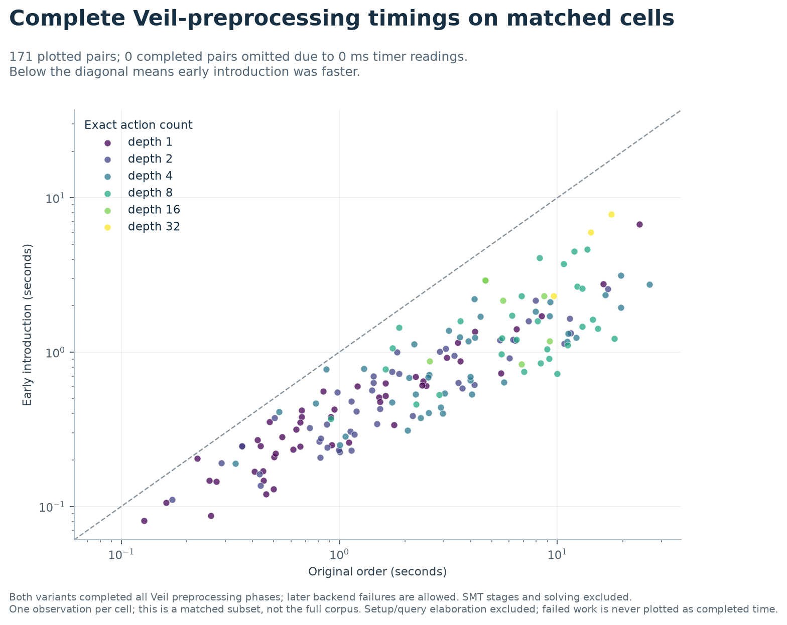
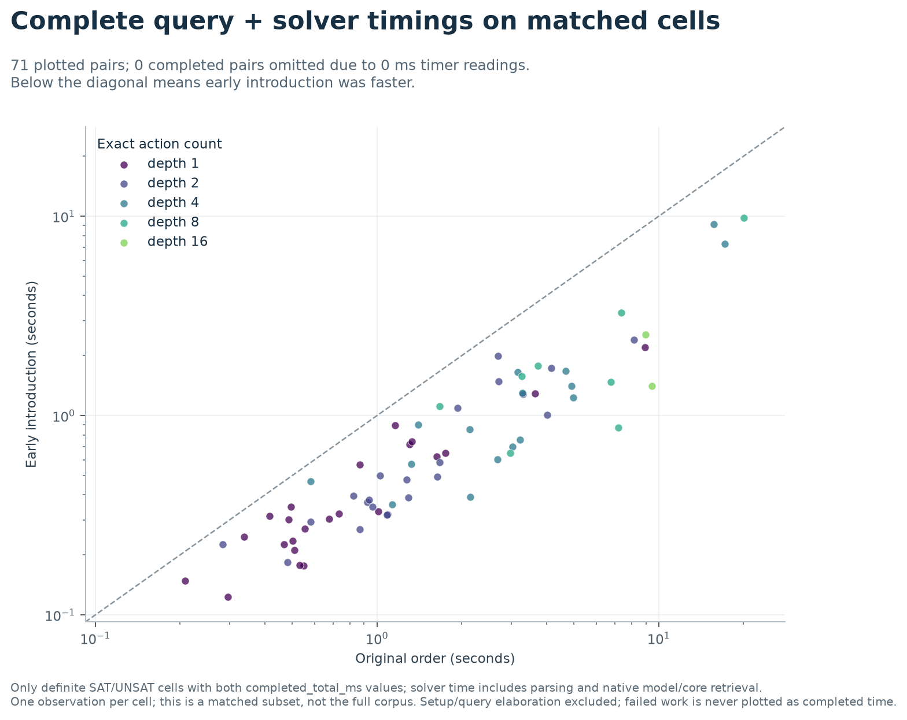
Cell code = phase:limit. N nextSimp; H hoist; D destruct/dsimp; M smtSimp; I intros; E embedding; Z normalize; T translate; W serialize; G setup; V query/VC elaboration; Q solver. S simp steps; R recursion; B heartbeat; P process timeout; ! other error. Hover for details.
| Model / exact query | 1 old |
1 early |
2 old |
2 early |
4 old |
4 early |
8 old |
8 early |
16 old |
16 early |
32 old |
32 early |
|---|---|---|---|---|---|---|---|---|---|---|---|---|
| AWS_AWSBuggy Examples/AWS/AWSBuggy.lean query / notesassert (dns_valid = false)DnsConsistent safety, line132 Buggy DNS race variant; same Veil namespace as AWSFixed and TLA/AWSDnsRace. |
E:! | E:! | E:! | E:! | E:! | E:! | E:R | E:R | N:S | E:R | N:R | D:B |
| AWS_AWSFixed Examples/AWS/AWSFixed.lean query / notesassert (dns_valid = false)DnsConsistent safety, line125 Repaired DNS race variant; include separately from AWSBuggy. |
UNSAT | UNSAT | UNSAT | UNSAT | Q:T | UNSAT | E:R | E:R | N:S | E:R | N:R | E:R |
| Ivy_Blockchain Examples/Ivy/Blockchain.lean query / notesassert (¬ (∀ n1 n2 n b t tr t1 t2, (((honest n1 ∧ honest n2) → ((block_confirmed n1 b t ∧ block_confirmed n2 b t) ∨ (¬ block_confirmed n1 b t ∧ ¬ block_confirmed n2 b t))) ∧ ((honest n1 ∧ honest n2) → ((transaction_confirmed tr n1 ∧ transaction_confirmed tr n2) ∨ (¬ transaction_confirmed tr n1 ∧ ¬ transaction_confirmed tr n2))) ∧ ((honest n ∧ leader n t2 ∧ transaction_time tr t1 ∧ tot.le t1 t2 ∧ broadcasted n ∧ honest n1) → transaction_confirmed tr n1))))Entire combined safety declaration, lines87–90 Negates all three conjuncts together and explicitly binds every source autoimplicit variable. |
UNSAT | UNSAT | UNSAT | UNSAT | H:B | UNSAT | N:S | H:S | N:R | H:S | N:R | H:B |
| Ivy_ChordRingMaintenance Examples/Ivy/ChordRingMaintenance.lean query / notesassert (∃ n, error n)no_error safety, line143 |
Q:! | Q:! | Q:! | Q:! | N:S | Q:! | N:S | Q:! | N:R | Q:! | N:R | D:B |
| Ivy_DecentralizedLock Examples/Ivy/DecentralizedLock.lean query / notesassert (∃ x y, has_lock x ∧ has_lock y ∧ x ≠ y)mutex safety, line51 |
UNSAT | UNSAT | UNSAT | UNSAT | UNSAT | UNSAT | UNSAT | UNSAT | H:B | UNSAT | N:R | UNSAT |
| Ivy_MultiSigAll Examples/Ivy/MultiSigAll.lean query / notesassert (∃ n k v d, cancelled n k v d ∧ ¬ expired d)cancelled_after_deadline safety, line78 Five sorts and high-arity relations; distinct query from the earlier paid-tuple reachability experiment. |
UNSAT | UNSAT | UNSAT | UNSAT | UNSAT | UNSAT | N:S | Q:T | N:R | Q:T | N:R | M:B |
| Ivy_MultiSigMajority Examples/Ivy/MultiSigMajority.lean query / notesassert (∃ n k v d, cancelled n k v d ∧ ¬ expired d)cancelled_after_deadline safety, line88 Quorum-based variant, distinct from MultiSigAll. |
UNSAT | UNSAT | UNSAT | UNSAT | UNSAT | UNSAT | N:S | Q:T | N:R | Q:T | N:R | M:B |
| Ivy_NOPaxos Examples/Ivy/NOPaxos.lean query / notesassert (∃ s v1 v2, gh_committed s v1 ∧ gh_committed s v2 ∧ v1 ≠ v2)consistency safety, line243 Relational Ivy model; distinct from the collection-based TLA/NOPaxos. |
UNSAT | UNSAT | D:B | UNSAT | N:S | UNSAT | N:R | Q:T | N:R | M:B | N:R | N:S |
| Ivy_PaxosEPR Examples/Ivy/PaxosEPR.lean query / notesassert (∃ n1 r1 v1 n2 r2 v2, decision n1 r1 v1 ∧ decision n2 r2 v2 ∧ v1 ≠ v2)coherence safety, line91 |
T:! | T:! | T:! | T:! | T:! | T:! | N:S | T:! | N:R | T:! | N:R | T:! |
| Ivy_PaxosFirstOrder Examples/Ivy/PaxosFirstOrder.lean query / notesassert (∃ n1 r1 v1 n2 r2 v2, decision n1 r1 v1 ∧ decision n2 r2 v2 ∧ v1 ≠ v2)coherence safety, line99 Distinct first-order variant of PaxosEPR. |
UNSAT | UNSAT | UNSAT | UNSAT | Q:T | Q:T | N:S | Q:T | N:R | Q:T | N:R | Q:T |
| Ivy_ReliableBroadcast Examples/Ivy/ReliableBroadcast.lean query / notesassert (∃ src dst r v, ¬ is_byz src ∧ ¬ is_byz dst ∧ voted dst src r v ∧ ¬ (sent src r ∧ initial_value src r v))vote_integrity safety, lines122–124 Full Byzantine/round-indexed model; distinct from Simulate/ReliableBroadcast. |
T:! | T:! | T:! | T:! | T:! | T:! | N:S | T:! | N:R | T:! | N:R | T:! |
| Ivy_RicartAgrawala Examples/Ivy/RicartAgrawala.lean query / notesassert (∃ n1 n2, holds n1 ∧ holds n2 ∧ n1 ≠ n2)mutual_exclusion safety, line51 |
UNSAT | UNSAT | UNSAT | UNSAT | UNSAT | UNSAT | Q:T | Q:T | N:S | Q:T | N:R | Q:T |
| Ivy_Ring Examples/Ivy/Ring.lean query / notesassert (∃ n1 n2, n1 ≠ n2 ∧ leader n1 ∧ leader n2)Existing unsat trace, lines57–60; single_leader safety, line42 Relational ring; overlaps Tutorial/Ring and POPL26/RingDec. Prefix explicitly sets veil.smt.trust=false. |
UNSAT | UNSAT | UNSAT | UNSAT | UNSAT | UNSAT | Q:T | Q:T | N:S | Q:T | N:R | Q:T |
| Ivy_SuzukiKasami Examples/Ivy/SuzukiKasami.lean query / notesassert (∃ n m, crit n ∧ crit m ∧ n ≠ m)mutex invariant, line111 No safety declaration; select the named mutex invariant. |
Q:! | Q:! | Q:! | Q:! | Q:! | Q:! | N:S | Q:! | N:R | Q:! | N:R | M:B |
| Ivy_TwoPhaseCommit Examples/Ivy/TwoPhaseCommit.lean query / notesassert (¬ (∀ n n2, (decide_commit n → ¬ decide_abort n2) ∧ (decide_commit n → vote_yes n2) ∧ (decide_abort n → abort_flag)))Entire combined safety declaration, lines85–87 Negates all three conjuncts: commit/abort agreement, unanimous yes votes on commit, and abort-flag consistency. |
UNSAT | UNSAT | UNSAT | UNSAT | UNSAT | UNSAT | UNSAT | UNSAT | N:S | Q:T | N:R | Q:T |
| Ivy_VerticalPaxosFirstOrder Examples/Ivy/VerticalPaxosFirstOrder.lean query / notesassert (∃ n1 r1 v1 n2 r2 v2, decision n1 r1 v1 ∧ decision n2 r2 v2 ∧ v1 ≠ v2)coherence safety, line132 Post-#gen_spec manual proof section is excluded; all model/invariant declarations are retained. |
T:! | T:! | T:! | T:! | N:S | T:! | N:R | T:! | N:R | H:B | N:R | H:B |
| Puzzles_DieHard Examples/Puzzles/DieHard.lean query / notesassert (big = 4)Negation of not_solved invariant, line59 Uses the puzzle objective rather than the structural jug-capacity invariant. |
UNSAT | UNSAT | UNSAT | UNSAT | UNSAT | UNSAT | SAT | SAT | Q:T | Q:T | E:R | E:R |
| Puzzles_Prisoners Examples/Puzzles/Prisoners.lean query / notesassert (Done ∧ ∃ p, p ≠ Counter ∧ timesSwitched p = 0)Safety declaration, line85 Concrete cardPrisoner=4 from #model_check is not imposed; symbolic theory parameters remain general. |
SAT | SAT | SAT | SAT | SAT | SAT | SAT | SAT | Q:T | Q:T | H:B | E:R |
| Puzzles_RiverCrossing Examples/Puzzles/RiverCrossing.lean query / notesassert (goat_pos = far ∧ wolf_pos = far ∧ cabbage_pos = far ∧ farmer_pos = far)Negation of unsolved invariant, line81 Uses the puzzle objective; retains action safety guards. |
UNSAT | UNSAT | UNSAT | UNSAT | UNSAT | UNSAT | UNSAT | UNSAT | UNSAT | UNSAT | N:S | UNSAT |
| Simulate_CheckpointLeaseFailover Examples/Simulate/CheckpointLeaseFailover.lean query / notesassert (∃ l expiry now, checkpointed_until l expiry ∧ current_epoch now ∧ epochOrd.le expiry now ∧ active_on_leader l)checkpointed_expiry_respected safety, lines77–80 Designed for simulation, but retained to expose symbolic-backend limitations. |
UNSAT | UNSAT | UNSAT | UNSAT | SAT | SAT | SAT | SAT | N:S | Q:T | N:R | Q:T |
| Simulate_LeaseKeepaliveRace Examples/Simulate/LeaseKeepaliveRace.lean query / notesassert (∃ c k, keepalive_succeeded c ∧ key_attached c k ∧ ¬ key_present k)renewal_keeps_keys_live safety, lines73–74 Designed for simulation; no concrete client/key domain bounds are imported. |
UNSAT | UNSAT | UNSAT | UNSAT | UNSAT | UNSAT | SAT | SAT | N:S | SAT | N:R | SAT |
| Simulate_ReliableBroadcast Examples/Simulate/ReliableBroadcast.lean query / notesassert (∃ n1 n2 v1 v2, delivered n1 v1 ∧ delivered n2 v2 ∧ v1 ≠ v2)agreement safety, lines61–62 Simplified simulation model, distinct from Ivy/ReliableBroadcast. |
UNSAT | UNSAT | UNSAT | UNSAT | UNSAT | Q:T | Q:T | Q:T | N:S | Q:T | N:R | Q:T |
| StellarConsensus_SCP Examples/StellarConsensus/SCP.lean query / notesassert (∃ n1 n2 b1 b2 v1 v2, intertwined n1 ∧ intertwined n2 ∧ confirmed_committed n1 b1 v1 ∧ confirmed_committed n2 b2 v2 ∧ v1 ≠ v2)intertwined_safe safety, lines218–220 Requires prebuilt Examples.StellarConsensus.SCPTheory; manual proof section after #gen_spec is excluded. |
T:! | T:! | T:! | T:! | N:S | T:! | N:S | T:! | N:R | M:B | N:R | D:B |
| Synchronous_FasterFloodSet Examples/Synchronous/FasterFloodSet.lean query / notesassert (∃ n1 n2 v1 v2, decision n1 v1 ∧ decision n2 v2 ∧ v1 ≠ v2)agreement safety, lines179–180 Optimized collection-based FloodSet variant; same namespace as other FloodSet files, isolated process required. |
T:! | T:! | T:! | T:! | T:! | T:! | T:! | T:! | D:B | H:S | N:S | H:S |
| Synchronous_FloodSet Examples/Synchronous/FloodSet.lean query / notesassert (∃ n1 n2 v1 v2, decision n1 v1 ∧ decision n2 v2 ∧ v1 ≠ v2)agreement safety, lines137–138 Contains genuine function-valued delivery choices. |
UNSAT | UNSAT | UNSAT | UNSAT | Q:T | Q:T | Q:T | Q:T | H:B | E:R | N:S | H:B |
| TLA_AWSDnsRace Examples/TLA/AWSDnsRace.lean query / notesassert (current_plan > 0 ∧ plan_deleted current_plan true)NeverDeleteActive invariant, line89 Finite-enum/Fin-based DNS race model; distinct from both AWS variants. |
E:! | E:! | E:! | E:! | E:! | E:! | E:! | E:! | N:S | E:R | N:S | E:R |
| TLA_Bakery Examples/TLA/Bakery.lean query / notesassert (∃ i j, i ≠ j ∧ pc i = cs ∧ pc j = cs)mutual_exclusion safety, line192 |
E:! | E:! | E:! | E:! | E:! | E:! | N:S | E:! | N:S | E:R | N:R | D:B |
| TLA_BcastByz Examples/TLA/BcastByz.lean query / notesassert (∃ p, isCorrect p ∧ pc p = AC)PCState.AC and protocol step actions; no declared protocol safety property Uses correct-process acceptance, rather than the static partition/cardinality sanity invariants. Contains collections and an Enumeration parameter. |
E:! | E:! | E:! | E:! | E:! | E:! | E:! | E:! | N:S | E:R | N:R | E:R |
| TLA_BuggyCircularBuffer Examples/TLA/BuggyCircularBuffer.lean query / notesassert (count > BUFFER_SIZE)Safety declaration, line58 |
E:! | E:! | E:! | E:! | E:! | E:! | E:! | E:! | E:! | E:! | E:R | E:R |
| TLA_EPaxos Examples/TLA/EPaxos.lean query / notesassert (∃ i, commitSet.count (committedMap i) > 1)Consistency invariant, lines1378–1379 Large collection/message model. Keep backend/elaboration failures as outcomes; do not replace its query with True. |
E:R | E:R | N:S | E:R | N:S | E:R | N:R | E:R | N:R | D:B | N:R | D:B |
| TLA_EWD840 Examples/TLA/EWD840.lean query / notesassert (terminationDetected ∧ ¬ terminated)TerminationDetection invariant, line103 Uses earlier ghost definitions; Fin domain size is a symbolic Nat parameter. |
E:! | E:! | E:! | E:! | E:! | E:! | E:! | E:! | H:B | E:R | N:S | E:R |
| TLA_German Examples/TLA/German.lean query / notesassert (¬ (∀ i j, i ≠ j → (((cache i).state = cE → (cache j).state = cI) ∧ ((cache i).state = cS → ((cache j).state = cI ∨ (cache j).state = cS)))))ctrlProp invariant, lines197–200 Explicitly binds the autoimplicit I/J variables from the source invariant. |
T:! | T:! | T:! | T:! | T:! | T:! | N:S | T:! | N:R | T:! | N:R | M:B |
| TLA_KVSnap Examples/TLA/KVSnap.lean query / notesassert (¬ serialization)Serialization safety, line277; ghost serialization, lines273–275 Retains CC definitions and Veil.Util.Permutations import. Serialization uses enumerations, lists and permutations; backend support is not assumed. |
E:! | E:! | E:! | E:! | E:! | E:! | E:! | E:! | N:S | E:R | N:R | E:R |
| TLA_KeyValueStore Examples/TLA/KeyValueStore.lean query / notesassert (¬ (snapshot_isolation ∧ transaction_cleanup))Txlifecycle invariant, line159 Both ghost predicates are defined before #gen_spec. Uses partial functions and sets. |
E:! | E:! | E:! | E:! | E:! | E:! | N:S | E:R | N:R | E:R | N:R | E:R |
| TLA_MultiPaxos Examples/TLA/MultiPaxos.lean query / notesassert (∃ v1 v2 s, Chosen v1 s ∧ Chosen v2 s ∧ v1 ≠ v2)consistency invariant, lines346–347 Uses earlier Chosen ghost predicate and collection-backed messages. |
E:! | E:! | E:! | E:! | H:B | E:R | N:S | E:R | N:S | E:R | N:R | M:B |
| TLA_MutexViolation Examples/TLA/MutexViolation.lean query / notesassert (∃ i j, i ≠ j ∧ pc i = cs ∧ pc j = cs)mutual_exclusion invariant, line313 Contains list-valued call stacks; symbolic translation may be unsupported independently of the optimization. |
E:! | E:! | E:! | E:! | D:B | E:! | N:S | E:R | N:R | E:R | N:R | D:B |
| TLA_NOPaxos Examples/TLA/NOPaxos.lean query / notesassert (¬ Linearizability)linearizability invariant, line944; ghost predicate, line316 Large collection/list/array model. Prefix sets veil.deferVCGeneration=true and maxHeartbeats=1600000. |
D:B | E:! | N:S | E:R | N:S | E:R | N:S | D:B | N:S | N:S | N:R | N:S |
| TLA_Paxos Examples/TLA/Paxos.lean query / notesassert (∃ v1 v2, Chosen v1 ∧ Chosen v2 ∧ v1 ≠ v2)Consistency invariant, line298 Uses earlier Chosen ghost predicate and bounded ballot datatype. |
E:! | E:! | E:! | E:! | E:! | E:! | N:S | E:! | N:S | E:R | N:R | H:B |
| TLA_Peterson Examples/TLA/Peterson.lean query / notesassert (∃ i j, i ≠ j ∧ lockcs i ∧ lockcs j)mutual_exclusion safety, lines108–109 lockcs is defined before #gen_spec; finite process/control enums. |
UNSAT | UNSAT | UNSAT | UNSAT | UNSAT | UNSAT | Q:T | Q:T | N:S | Q:T | N:R | Q:T |
| TLA_Raft Examples/TLA/Raft.lean query / notesassert (∃ i j, i ≠ j ∧ currentTerm i = currentTerm j ∧ pcState i Leader ∧ pcState j Leader)BothLeader/MoreThanOneLeader specification comments, lines1059–1066 No active safety/invariant declaration. Tests the documented election-safety condition. Retains source-specific large heartbeat/typeclass limits. |
E:! | E:R | H:! | E:! | N:! | D:! | N:P | H:B | N:R | H:B | N:R | N:B |
| TLA_Room Examples/TLA/Room.lean query / notesassert (∃ r g1 g2, guestTset.contains g1 (registered r) ∧ guestTset.contains g2 (registered r) ∧ g1 ≠ g2)registered_at_most_one safety, lines122–123 Collection-based hotel key model. |
E:! | E:! | E:! | E:! | E:! | E:! | E:! | E:! | N:S | E:R | N:R | E:R |
| TLA_SimpleAllocator Examples/TLA/SimpleAllocator.lean query / notesassert (¬ (∀ c1 c2 : client, c1 ≠ c2 → resSet.isEmpty (resSet.intersection (alloc c1) (alloc c2))))resource_mutex invariant, line83 Negates the exact declared predicate; do not replace it by elementwise membership, since the abstract TSet class does not state an intersection-membership law. |
E:! | E:! | E:! | E:! | E:! | E:! | E:! | E:! | N:S | E:R | N:R | E:R |
| TLA_Traffic Examples/TLA/Traffic.lean query / notesassert (at_light = false)Negation of puzzle_unsolvable safety, lines70–72 Reaches the intended puzzle goal: the car leaves the light. |
UNSAT | UNSAT | SAT | SAT | SAT | SAT | SAT | SAT | SAT | SAT | N:S | SAT |
| TLA_TwoPhaseCommit Examples/TLA/TwoPhaseCommit.lean query / notesassert (∃ rm1 rm2, (rmState rm1 == committed) ∧ (rmState rm2 == aborted))TCConsistency invariant, lines219–220 Distinct finite-control-state model from Ivy/TwoPhaseCommit; preserves the original Bool equality predicate. |
UNSAT | UNSAT | UNSAT | UNSAT | UNSAT | UNSAT | Q:T | Q:T | N:S | Q:T | N:R | Q:T |
| Tutorial_FloodSet Examples/Tutorial/FloodSet.lean query / notesassert (¬ (∀ n1 n2 v1 v2, decision n1 v1 ∧ decision n2 v2 → v1 = v2))Existing agreement_violation trace, lines392–395 Tutorial variant overlaps Synchronous/FloodSet but is retained as its own model-bearing file. |
UNSAT | UNSAT | UNSAT | UNSAT | Q:T | Q:T | Q:T | Q:T | N:S | H:S | N:S | H:S |
| Tutorial_POPL26_RingDec Examples/Tutorial/POPL26/RingDec.lean query / notesassert (∃ n1 n2, n1 ≠ n2 ∧ leader n1 ∧ leader n2)Existing unsat trace, lines56–59 Near-duplicate relational Ring teaching variant, intentionally retained for complete file coverage. |
UNSAT | UNSAT | UNSAT | UNSAT | UNSAT | UNSAT | Q:T | Q:T | N:S | Q:T | N:R | Q:T |
| Tutorial_POPL26_RingFin Examples/Tutorial/POPL26/RingFin.lean query / notesassert (leader.length > 1)single_leader safety, line53 List-based concrete implementation over a symbolic node type; distinct from relational Ring. No concrete nextNode/topology assignment is imported. |
T:! | T:! | T:! | T:! | T:! | T:! | T:! | T:! | T:! | T:! | N:S | T:! |
| Tutorial_POPL26_RingNat Examples/Tutorial/POPL26/RingNat.lean query / notesassert (leader.length > 1)single_leader safety, line50 List-based Nat implementation. Concrete allNodes/nextNode values from #model_check are intentionally not imposed. |
T:! | T:! | T:! | T:! | T:! | T:! | T:! | T:! | T:! | T:! | T:! | T:! |
| Tutorial_Ring Examples/Tutorial/Ring.lean query / notesassert (∃ l1 l2, leader l1 ∧ leader l2 ∧ l1 ≠ l2)single_leader safety, line217 Tutorial relational Ring, retained separately from Ivy/Ring and POPL26/RingDec. |
UNSAT | UNSAT | UNSAT | UNSAT | UNSAT | UNSAT | Q:T | Q:T | N:S | Q:T | N:R | Q:T |
Solver curves include only completed SAT/UNSAT calls to the entire native Smt.solve wrapper. Timeouts and unknown results appear only in the outcome strip; their elapsed durations are not plotted as completed work.
assert (dns_valid = false)
| Exact actions | Original | Early introduction |
|---|---|---|
| 1 | — | — |
| 2 | — | — |
| 4 | — | — |
| 8 | — | — |
| 16 | — | — |
| 32 | — | — |
A dash means no serialized query was emitted. Query hashes and exact byte counts are in queries.csv; these are the files replayed by the solver.
assert (dns_valid = false)
| Exact actions | Original | Early introduction |
|---|---|---|
| 1 | SMT-LIB 10817 bytes | SMT-LIB 10817 bytes |
| 2 | SMT-LIB 19656 bytes | SMT-LIB 19656 bytes |
| 4 | SMT-LIB 37480 bytes | SMT-LIB 37480 bytes |
| 8 | — | — |
| 16 | — | — |
| 32 | — | — |
A dash means no serialized query was emitted. Query hashes and exact byte counts are in queries.csv; these are the files replayed by the solver.
assert (¬ (∀ n1 n2 n b t tr t1 t2, (((honest n1 ∧ honest n2) → ((block_confirmed n1 b t ∧ block_confirmed n2 b t) ∨ (¬ block_confirmed n1 b t ∧ ¬ block_confirmed n2 b t))) ∧ ((honest n1 ∧ honest n2) → ((transaction_confirmed tr n1 ∧ transaction_confirmed tr n2) ∨ (¬ transaction_confirmed tr n1 ∧ ¬ transaction_confirmed tr n2))) ∧ ((honest n ∧ leader n t2 ∧ transaction_time tr t1 ∧ tot.le t1 t2 ∧ broadcasted n ∧ honest n1) → transaction_confirmed tr n1))))
| Exact actions | Original | Early introduction |
|---|---|---|
| 1 | SMT-LIB 12898 bytes | SMT-LIB 12898 bytes |
| 2 | SMT-LIB 22170 bytes | SMT-LIB 22170 bytes |
| 4 | — | SMT-LIB 40725 bytes |
| 8 | — | — |
| 16 | — | — |
| 32 | — | — |
A dash means no serialized query was emitted. Query hashes and exact byte counts are in queries.csv; these are the files replayed by the solver.
assert (∃ n, error n)
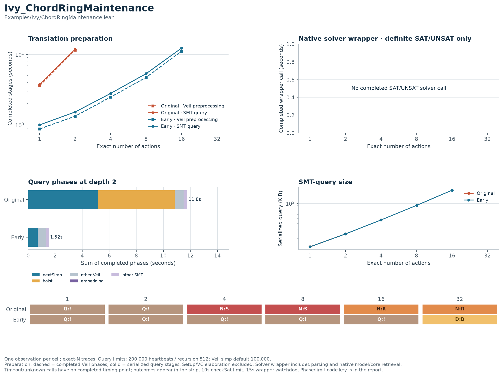
| Exact actions | Original | Early introduction |
|---|---|---|
| 1 | SMT-LIB 14147 bytes | SMT-LIB 14147 bytes |
| 2 | SMT-LIB 25426 bytes | SMT-LIB 25426 bytes |
| 4 | — | SMT-LIB 47984 bytes |
| 8 | — | SMT-LIB 93100 bytes |
| 16 | — | SMT-LIB 185703 bytes |
| 32 | — | — |
A dash means no serialized query was emitted. Query hashes and exact byte counts are in queries.csv; these are the files replayed by the solver.
assert (∃ x y, has_lock x ∧ has_lock y ∧ x ≠ y)
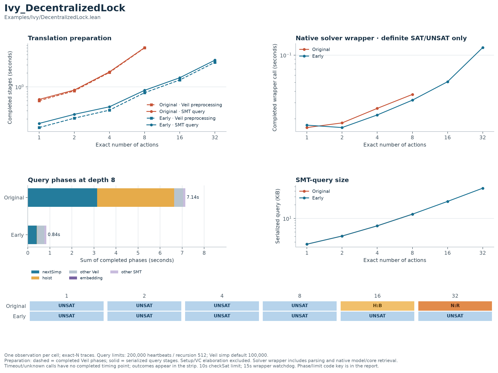
| Exact actions | Original | Early introduction |
|---|---|---|
| 1 | SMT-LIB 2762 bytes | SMT-LIB 2764 bytes |
| 2 | SMT-LIB 4184 bytes | SMT-LIB 4186 bytes |
| 4 | SMT-LIB 7028 bytes | SMT-LIB 7030 bytes |
| 8 | SMT-LIB 12716 bytes | SMT-LIB 12718 bytes |
| 16 | — | SMT-LIB 24366 bytes |
| 32 | — | SMT-LIB 47758 bytes |
A dash means no serialized query was emitted. Query hashes and exact byte counts are in queries.csv; these are the files replayed by the solver.
assert (∃ n k v d, cancelled n k v d ∧ ¬ expired d)
| Exact actions | Original | Early introduction |
|---|---|---|
| 1 | SMT-LIB 11419 bytes | SMT-LIB 11419 bytes |
| 2 | SMT-LIB 20559 bytes | SMT-LIB 20559 bytes |
| 4 | SMT-LIB 38839 bytes | SMT-LIB 38839 bytes |
| 8 | — | SMT-LIB 75399 bytes |
| 16 | — | SMT-LIB 149759 bytes |
| 32 | — | — |
A dash means no serialized query was emitted. Query hashes and exact byte counts are in queries.csv; these are the files replayed by the solver.
assert (∃ n k v d, cancelled n k v d ∧ ¬ expired d)
| Exact actions | Original | Early introduction |
|---|---|---|
| 1 | SMT-LIB 11767 bytes | SMT-LIB 11767 bytes |
| 2 | SMT-LIB 21066 bytes | SMT-LIB 21066 bytes |
| 4 | SMT-LIB 39664 bytes | SMT-LIB 39664 bytes |
| 8 | — | SMT-LIB 76860 bytes |
| 16 | — | SMT-LIB 152526 bytes |
| 32 | — | — |
A dash means no serialized query was emitted. Query hashes and exact byte counts are in queries.csv; these are the files replayed by the solver.
assert (∃ s v1 v2, gh_committed s v1 ∧ gh_committed s v2 ∧ v1 ≠ v2)
| Exact actions | Original | Early introduction |
|---|---|---|
| 1 | SMT-LIB 60156 bytes | SMT-LIB 60158 bytes |
| 2 | — | SMT-LIB 115030 bytes |
| 4 | — | SMT-LIB 224774 bytes |
| 8 | — | SMT-LIB 444262 bytes |
| 16 | — | — |
| 32 | — | — |
A dash means no serialized query was emitted. Query hashes and exact byte counts are in queries.csv; these are the files replayed by the solver.
assert (∃ n1 r1 v1 n2 r2 v2, decision n1 r1 v1 ∧ decision n2 r2 v2 ∧ v1 ≠ v2)
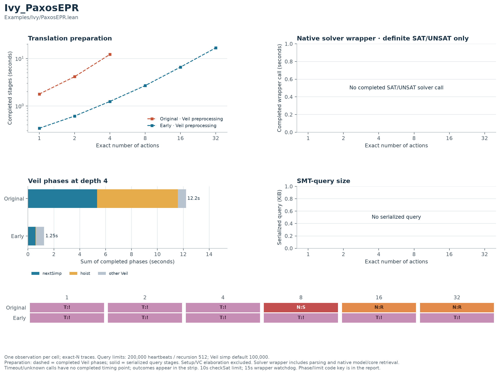
| Exact actions | Original | Early introduction |
|---|---|---|
| 1 | — | — |
| 2 | — | — |
| 4 | — | — |
| 8 | — | — |
| 16 | — | — |
| 32 | — | — |
A dash means no serialized query was emitted. Query hashes and exact byte counts are in queries.csv; these are the files replayed by the solver.
assert (∃ n1 r1 v1 n2 r2 v2, decision n1 r1 v1 ∧ decision n2 r2 v2 ∧ v1 ≠ v2)
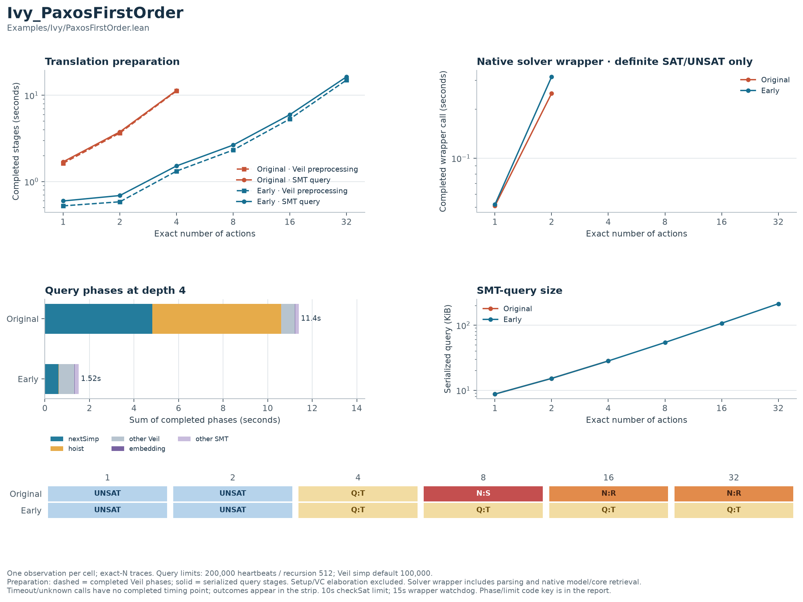
| Exact actions | Original | Early introduction |
|---|---|---|
| 1 | SMT-LIB 8965 bytes | SMT-LIB 8965 bytes |
| 2 | SMT-LIB 15622 bytes | SMT-LIB 15622 bytes |
| 4 | SMT-LIB 28936 bytes | SMT-LIB 28936 bytes |
| 8 | — | SMT-LIB 55564 bytes |
| 16 | — | SMT-LIB 109783 bytes |
| 32 | — | SMT-LIB 218615 bytes |
A dash means no serialized query was emitted. Query hashes and exact byte counts are in queries.csv; these are the files replayed by the solver.
assert (∃ src dst r v, ¬ is_byz src ∧ ¬ is_byz dst ∧ voted dst src r v ∧ ¬ (sent src r ∧ initial_value src r v))
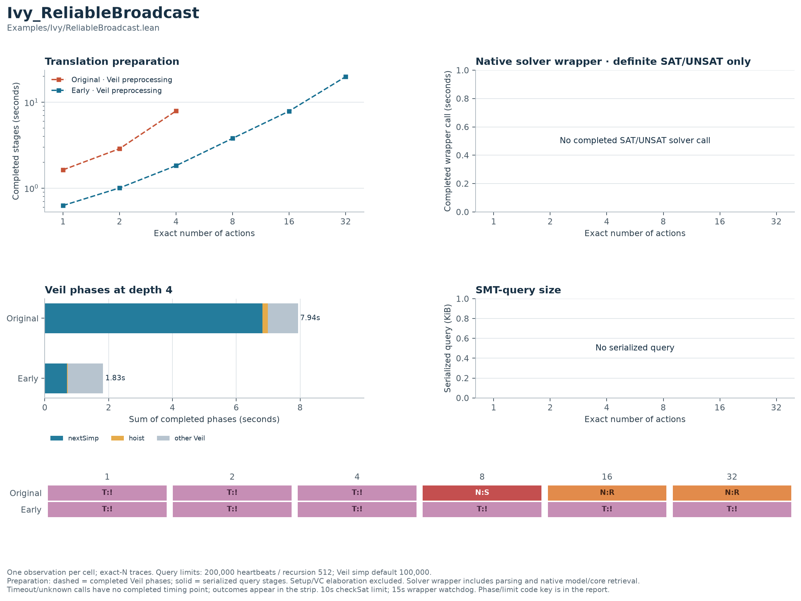
| Exact actions | Original | Early introduction |
|---|---|---|
| 1 | — | — |
| 2 | — | — |
| 4 | — | — |
| 8 | — | — |
| 16 | — | — |
| 32 | — | — |
A dash means no serialized query was emitted. Query hashes and exact byte counts are in queries.csv; these are the files replayed by the solver.
assert (∃ n1 n2, holds n1 ∧ holds n2 ∧ n1 ≠ n2)
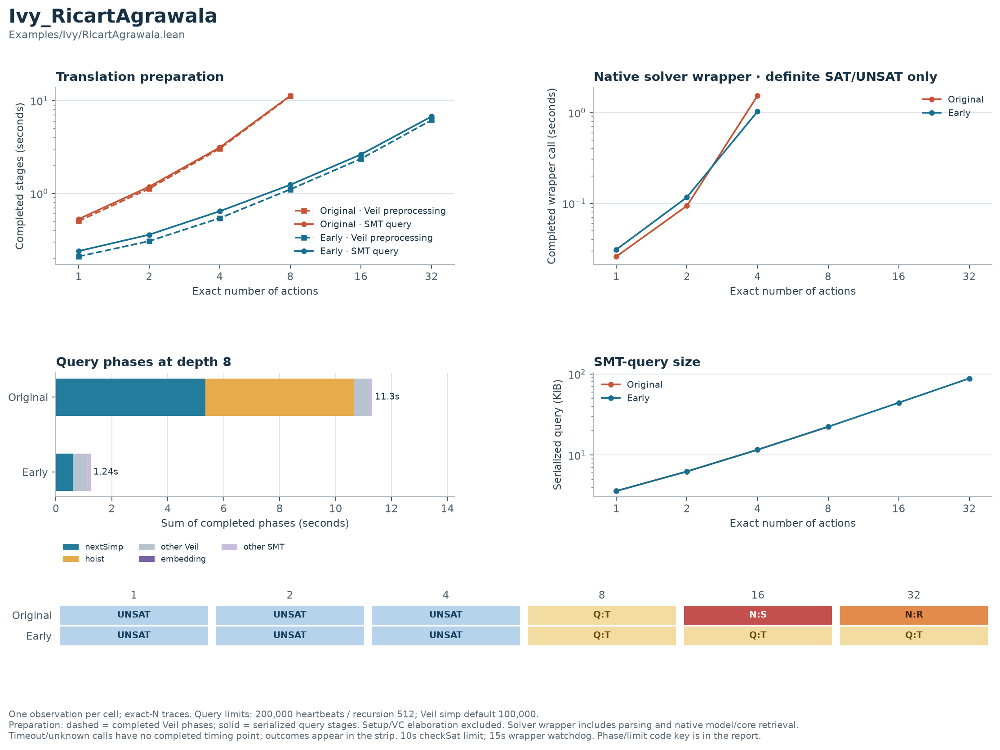
| Exact actions | Original | Early introduction |
|---|---|---|
| 1 | SMT-LIB 3699 bytes | SMT-LIB 3699 bytes |
| 2 | SMT-LIB 6439 bytes | SMT-LIB 6439 bytes |
| 4 | SMT-LIB 11919 bytes | SMT-LIB 11919 bytes |
| 8 | SMT-LIB 22879 bytes | SMT-LIB 22879 bytes |
| 16 | — | SMT-LIB 45272 bytes |
| 32 | — | SMT-LIB 90232 bytes |
A dash means no serialized query was emitted. Query hashes and exact byte counts are in queries.csv; these are the files replayed by the solver.
assert (∃ n1 n2, n1 ≠ n2 ∧ leader n1 ∧ leader n2)
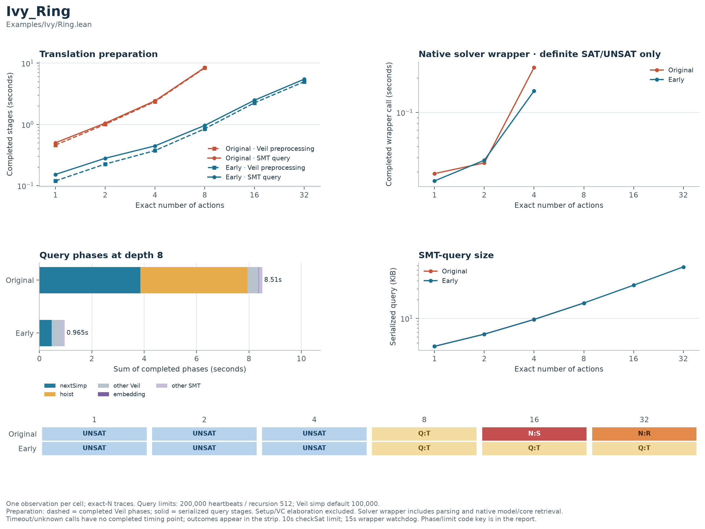
| Exact actions | Original | Early introduction |
|---|---|---|
| 1 | SMT-LIB 3642 bytes | SMT-LIB 3644 bytes |
| 2 | SMT-LIB 5709 bytes | SMT-LIB 5713 bytes |
| 4 | SMT-LIB 9843 bytes | SMT-LIB 9851 bytes |
| 8 | SMT-LIB 18111 bytes | SMT-LIB 18127 bytes |
| 16 | — | SMT-LIB 35064 bytes |
| 32 | — | SMT-LIB 69064 bytes |
A dash means no serialized query was emitted. Query hashes and exact byte counts are in queries.csv; these are the files replayed by the solver.
assert (∃ n m, crit n ∧ crit m ∧ n ≠ m)
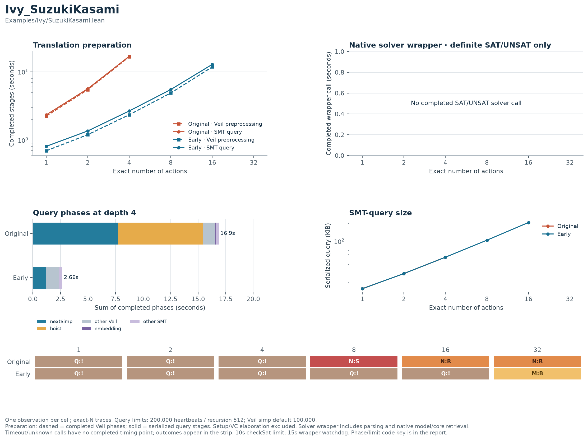
| Exact actions | Original | Early introduction |
|---|---|---|
| 1 | SMT-LIB 16028 bytes | SMT-LIB 16028 bytes |
| 2 | SMT-LIB 28953 bytes | SMT-LIB 28953 bytes |
| 4 | SMT-LIB 54803 bytes | SMT-LIB 54803 bytes |
| 8 | — | SMT-LIB 106503 bytes |
| 16 | — | SMT-LIB 212368 bytes |
| 32 | — | — |
A dash means no serialized query was emitted. Query hashes and exact byte counts are in queries.csv; these are the files replayed by the solver.
assert (¬ (∀ n n2, (decide_commit n → ¬ decide_abort n2) ∧ (decide_commit n → vote_yes n2) ∧ (decide_abort n → abort_flag)))
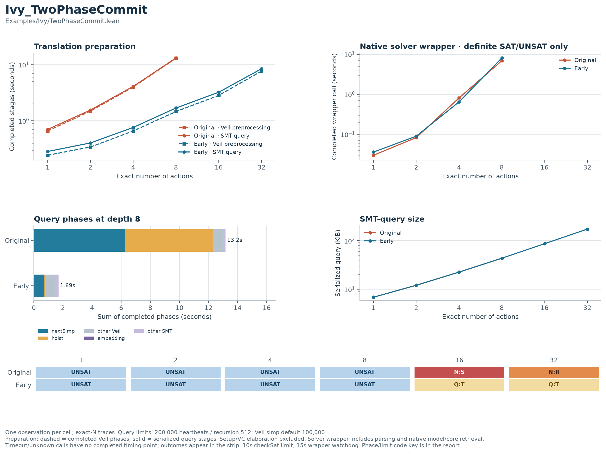
| Exact actions | Original | Early introduction |
|---|---|---|
| 1 | SMT-LIB 7062 bytes | SMT-LIB 7059 bytes |
| 2 | SMT-LIB 12430 bytes | SMT-LIB 12427 bytes |
| 4 | SMT-LIB 23166 bytes | SMT-LIB 23163 bytes |
| 8 | SMT-LIB 44638 bytes | SMT-LIB 44635 bytes |
| 16 | — | SMT-LIB 88689 bytes |
| 32 | — | SMT-LIB 177265 bytes |
A dash means no serialized query was emitted. Query hashes and exact byte counts are in queries.csv; these are the files replayed by the solver.
assert (∃ n1 r1 v1 n2 r2 v2, decision n1 r1 v1 ∧ decision n2 r2 v2 ∧ v1 ≠ v2)
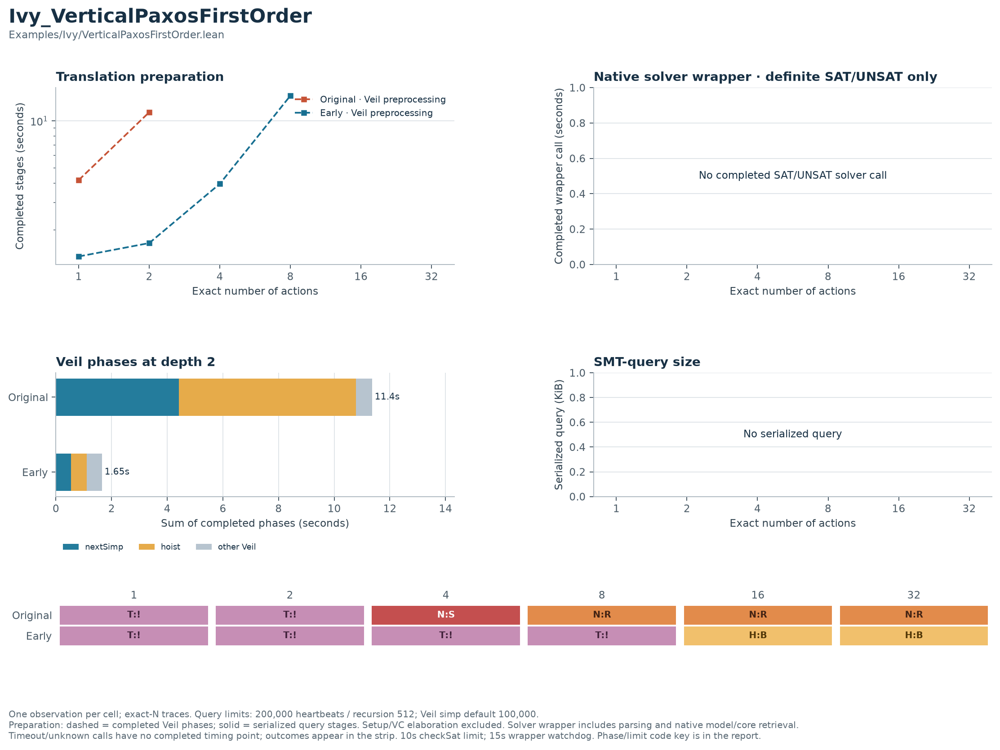
| Exact actions | Original | Early introduction |
|---|---|---|
| 1 | — | — |
| 2 | — | — |
| 4 | — | — |
| 8 | — | — |
| 16 | — | — |
| 32 | — | — |
A dash means no serialized query was emitted. Query hashes and exact byte counts are in queries.csv; these are the files replayed by the solver.
assert (big = 4)
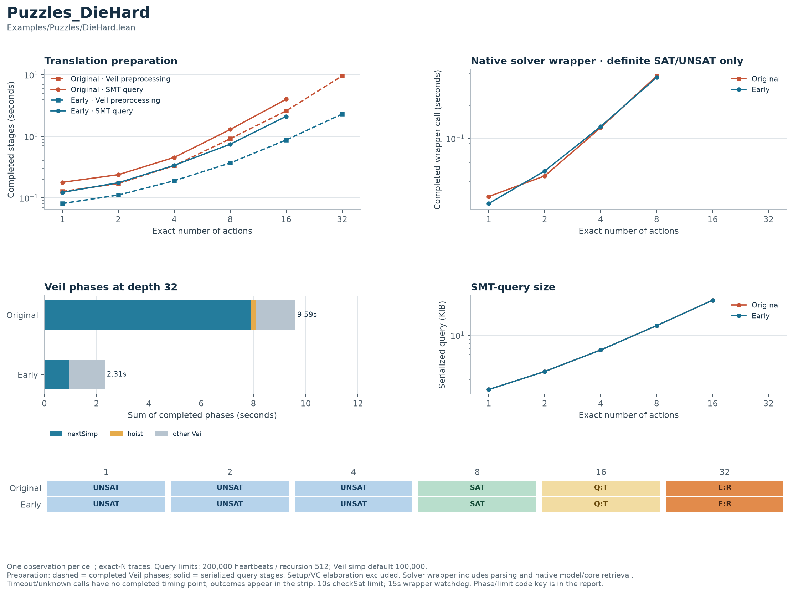
| Exact actions | Original | Early introduction |
|---|---|---|
| 1 | SMT-LIB 2352 bytes | SMT-LIB 2352 bytes |
| 2 | SMT-LIB 3835 bytes | SMT-LIB 3835 bytes |
| 4 | SMT-LIB 6878 bytes | SMT-LIB 6878 bytes |
| 8 | SMT-LIB 13350 bytes | SMT-LIB 13350 bytes |
| 16 | SMT-LIB 26573 bytes | SMT-LIB 26573 bytes |
| 32 | — | — |
A dash means no serialized query was emitted. Query hashes and exact byte counts are in queries.csv; these are the files replayed by the solver.
assert (Done ∧ ∃ p, p ≠ Counter ∧ timesSwitched p = 0)
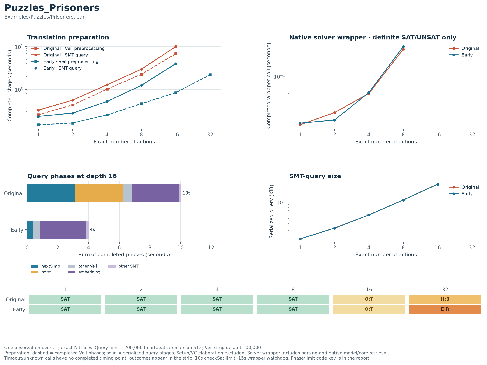
| Exact actions | Original | Early introduction |
|---|---|---|
| 1 | SMT-LIB 2127 bytes | SMT-LIB 2127 bytes |
| 2 | SMT-LIB 3382 bytes | SMT-LIB 3382 bytes |
| 4 | SMT-LIB 5928 bytes | SMT-LIB 5928 bytes |
| 8 | SMT-LIB 11239 bytes | SMT-LIB 11239 bytes |
| 16 | SMT-LIB 22052 bytes | SMT-LIB 22052 bytes |
| 32 | — | — |
A dash means no serialized query was emitted. Query hashes and exact byte counts are in queries.csv; these are the files replayed by the solver.
assert (goat_pos = far ∧ wolf_pos = far ∧ cabbage_pos = far ∧ farmer_pos = far)
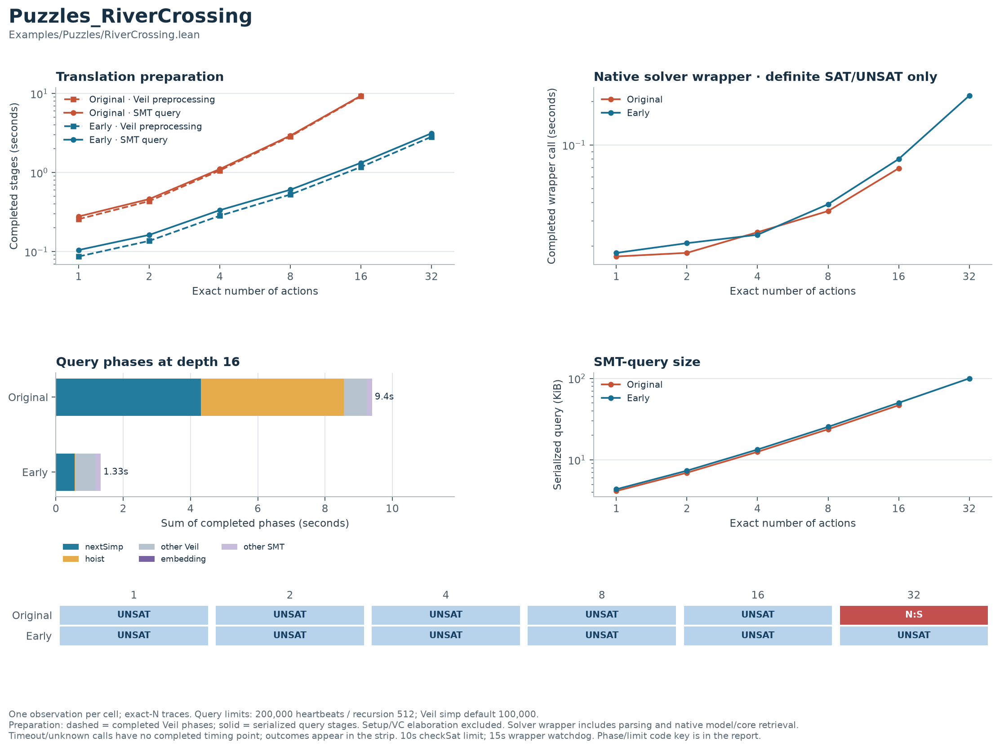
| Exact actions | Original | Early introduction |
|---|---|---|
| 1 | SMT-LIB 4251 bytes | SMT-LIB 4463 bytes |
| 2 | SMT-LIB 7121 bytes | SMT-LIB 7545 bytes |
| 4 | SMT-LIB 12861 bytes | SMT-LIB 13709 bytes |
| 8 | SMT-LIB 24341 bytes | SMT-LIB 26037 bytes |
| 16 | SMT-LIB 47952 bytes | SMT-LIB 51368 bytes |
| 32 | — | SMT-LIB 102360 bytes |
A dash means no serialized query was emitted. Query hashes and exact byte counts are in queries.csv; these are the files replayed by the solver.
assert (∃ l expiry now, checkpointed_until l expiry ∧ current_epoch now ∧ epochOrd.le expiry now ∧ active_on_leader l)
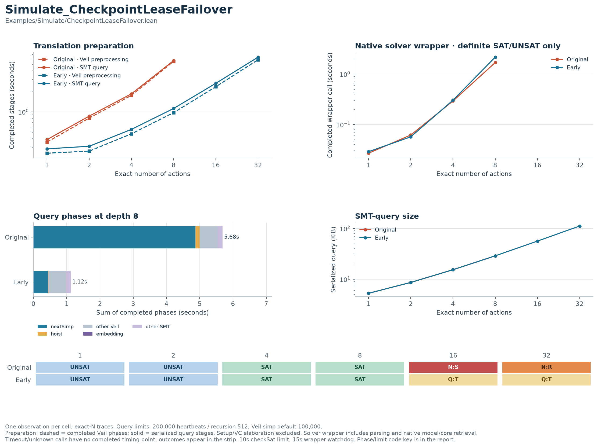
| Exact actions | Original | Early introduction |
|---|---|---|
| 1 | SMT-LIB 5428 bytes | SMT-LIB 5428 bytes |
| 2 | SMT-LIB 8880 bytes | SMT-LIB 8880 bytes |
| 4 | SMT-LIB 15784 bytes | SMT-LIB 15784 bytes |
| 8 | SMT-LIB 29592 bytes | SMT-LIB 29592 bytes |
| 16 | — | SMT-LIB 57720 bytes |
| 32 | — | SMT-LIB 114168 bytes |
A dash means no serialized query was emitted. Query hashes and exact byte counts are in queries.csv; these are the files replayed by the solver.
assert (∃ c k, keepalive_succeeded c ∧ key_attached c k ∧ ¬ key_present k)
| Exact actions | Original | Early introduction |
|---|---|---|
| 1 | SMT-LIB 5067 bytes | SMT-LIB 5067 bytes |
| 2 | SMT-LIB 8747 bytes | SMT-LIB 8747 bytes |
| 4 | SMT-LIB 16107 bytes | SMT-LIB 16107 bytes |
| 8 | SMT-LIB 30827 bytes | SMT-LIB 30827 bytes |
| 16 | — | SMT-LIB 60883 bytes |
| 32 | — | SMT-LIB 121235 bytes |
A dash means no serialized query was emitted. Query hashes and exact byte counts are in queries.csv; these are the files replayed by the solver.
assert (∃ n1 n2 v1 v2, delivered n1 v1 ∧ delivered n2 v2 ∧ v1 ≠ v2)
| Exact actions | Original | Early introduction |
|---|---|---|
| 1 | SMT-LIB 4992 bytes | SMT-LIB 4992 bytes |
| 2 | SMT-LIB 8632 bytes | SMT-LIB 8632 bytes |
| 4 | SMT-LIB 15912 bytes | SMT-LIB 15912 bytes |
| 8 | SMT-LIB 30472 bytes | SMT-LIB 30472 bytes |
| 16 | — | SMT-LIB 60090 bytes |
| 32 | — | SMT-LIB 119514 bytes |
A dash means no serialized query was emitted. Query hashes and exact byte counts are in queries.csv; these are the files replayed by the solver.
assert (∃ n1 n2 b1 b2 v1 v2, intertwined n1 ∧ intertwined n2 ∧ confirmed_committed n1 b1 v1 ∧ confirmed_committed n2 b2 v2 ∧ v1 ≠ v2)
| Exact actions | Original | Early introduction |
|---|---|---|
| 1 | — | — |
| 2 | — | — |
| 4 | — | — |
| 8 | — | — |
| 16 | — | — |
| 32 | — | — |
A dash means no serialized query was emitted. Query hashes and exact byte counts are in queries.csv; these are the files replayed by the solver.
assert (∃ n1 n2 v1 v2, decision n1 v1 ∧ decision n2 v2 ∧ v1 ≠ v2)
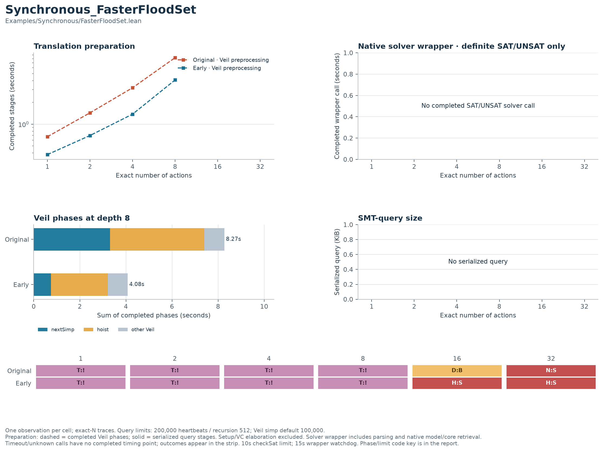
| Exact actions | Original | Early introduction |
|---|---|---|
| 1 | — | — |
| 2 | — | — |
| 4 | — | — |
| 8 | — | — |
| 16 | — | — |
| 32 | — | — |
A dash means no serialized query was emitted. Query hashes and exact byte counts are in queries.csv; these are the files replayed by the solver.
assert (∃ n1 n2 v1 v2, decision n1 v1 ∧ decision n2 v2 ∧ v1 ≠ v2)
| Exact actions | Original | Early introduction |
|---|---|---|
| 1 | SMT-LIB 4348 bytes | SMT-LIB 4348 bytes |
| 2 | SMT-LIB 6997 bytes | SMT-LIB 6997 bytes |
| 4 | SMT-LIB 12320 bytes | SMT-LIB 12320 bytes |
| 8 | SMT-LIB 23097 bytes | SMT-LIB 23097 bytes |
| 16 | — | — |
| 32 | — | — |
A dash means no serialized query was emitted. Query hashes and exact byte counts are in queries.csv; these are the files replayed by the solver.
assert (current_plan > 0 ∧ plan_deleted current_plan true)
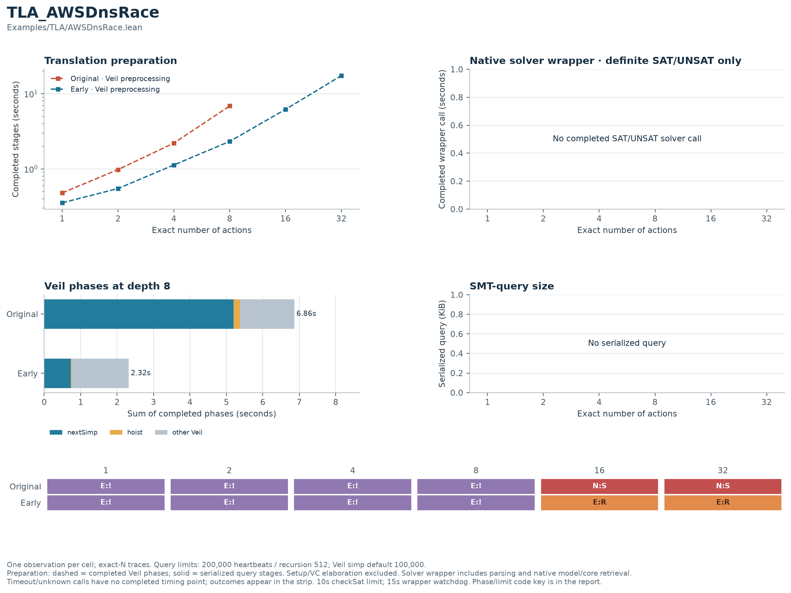
| Exact actions | Original | Early introduction |
|---|---|---|
| 1 | — | — |
| 2 | — | — |
| 4 | — | — |
| 8 | — | — |
| 16 | — | — |
| 32 | — | — |
A dash means no serialized query was emitted. Query hashes and exact byte counts are in queries.csv; these are the files replayed by the solver.
assert (∃ i j, i ≠ j ∧ pc i = cs ∧ pc j = cs)
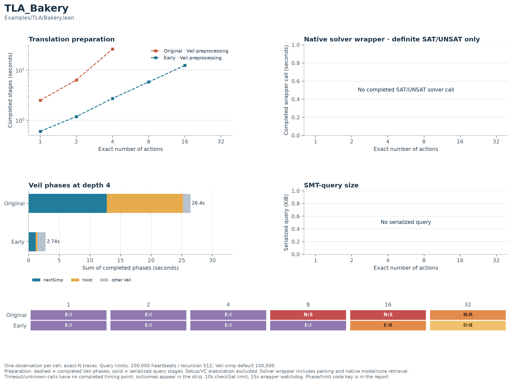
| Exact actions | Original | Early introduction |
|---|---|---|
| 1 | — | — |
| 2 | — | — |
| 4 | — | — |
| 8 | — | — |
| 16 | — | — |
| 32 | — | — |
A dash means no serialized query was emitted. Query hashes and exact byte counts are in queries.csv; these are the files replayed by the solver.
assert (∃ p, isCorrect p ∧ pc p = AC)
| Exact actions | Original | Early introduction |
|---|---|---|
| 1 | — | — |
| 2 | — | — |
| 4 | — | — |
| 8 | — | — |
| 16 | — | — |
| 32 | — | — |
A dash means no serialized query was emitted. Query hashes and exact byte counts are in queries.csv; these are the files replayed by the solver.
assert (count > BUFFER_SIZE)
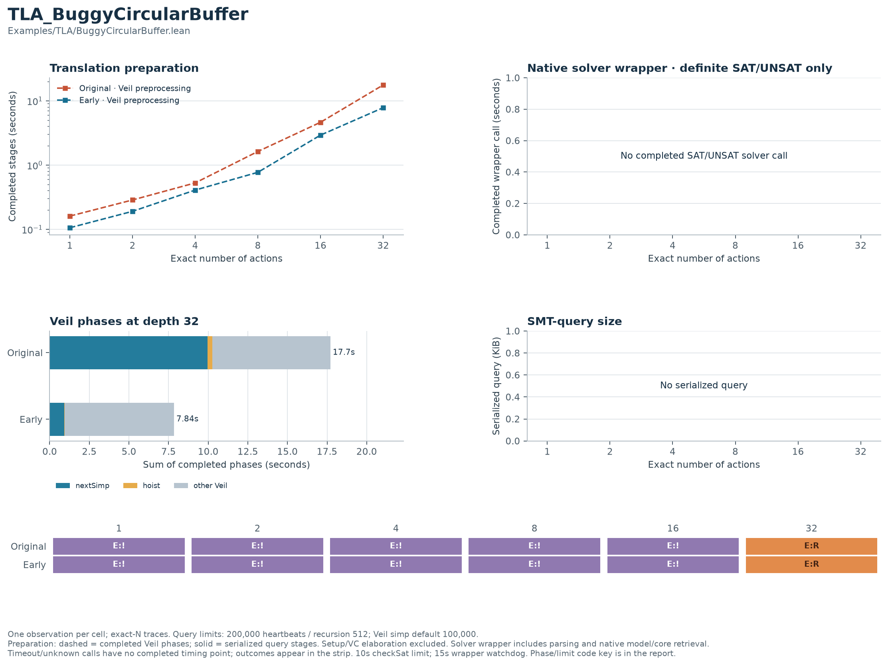
| Exact actions | Original | Early introduction |
|---|---|---|
| 1 | — | — |
| 2 | — | — |
| 4 | — | — |
| 8 | — | — |
| 16 | — | — |
| 32 | — | — |
A dash means no serialized query was emitted. Query hashes and exact byte counts are in queries.csv; these are the files replayed by the solver.
assert (∃ i, commitSet.count (committedMap i) > 1)
| Exact actions | Original | Early introduction |
|---|---|---|
| 1 | — | — |
| 2 | — | — |
| 4 | — | — |
| 8 | — | — |
| 16 | — | — |
| 32 | — | — |
A dash means no serialized query was emitted. Query hashes and exact byte counts are in queries.csv; these are the files replayed by the solver.
assert (terminationDetected ∧ ¬ terminated)
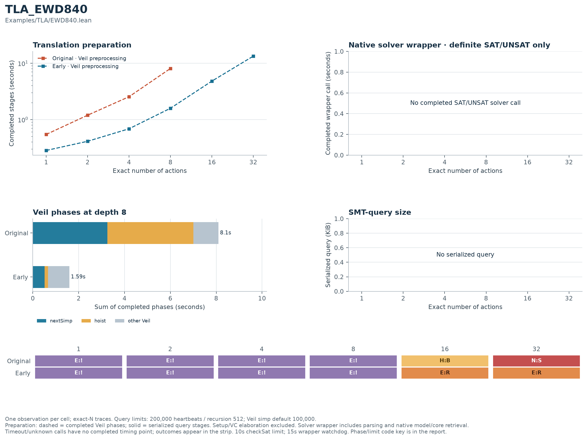
| Exact actions | Original | Early introduction |
|---|---|---|
| 1 | — | — |
| 2 | — | — |
| 4 | — | — |
| 8 | — | — |
| 16 | — | — |
| 32 | — | — |
A dash means no serialized query was emitted. Query hashes and exact byte counts are in queries.csv; these are the files replayed by the solver.
assert (¬ (∀ i j, i ≠ j → (((cache i).state = cE → (cache j).state = cI) ∧ ((cache i).state = cS → ((cache j).state = cI ∨ (cache j).state = cS)))))
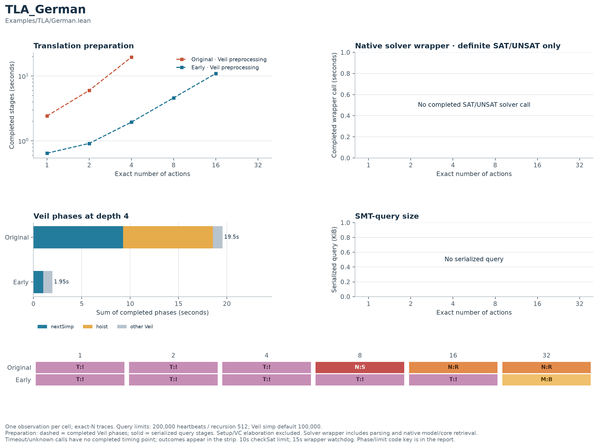
| Exact actions | Original | Early introduction |
|---|---|---|
| 1 | — | — |
| 2 | — | — |
| 4 | — | — |
| 8 | — | — |
| 16 | — | — |
| 32 | — | — |
A dash means no serialized query was emitted. Query hashes and exact byte counts are in queries.csv; these are the files replayed by the solver.
assert (¬ serialization)
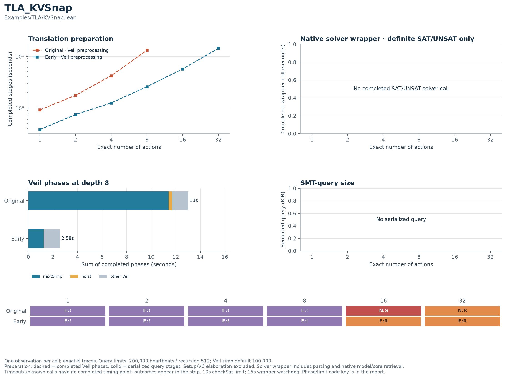
| Exact actions | Original | Early introduction |
|---|---|---|
| 1 | — | — |
| 2 | — | — |
| 4 | — | — |
| 8 | — | — |
| 16 | — | — |
| 32 | — | — |
A dash means no serialized query was emitted. Query hashes and exact byte counts are in queries.csv; these are the files replayed by the solver.
assert (¬ (snapshot_isolation ∧ transaction_cleanup))
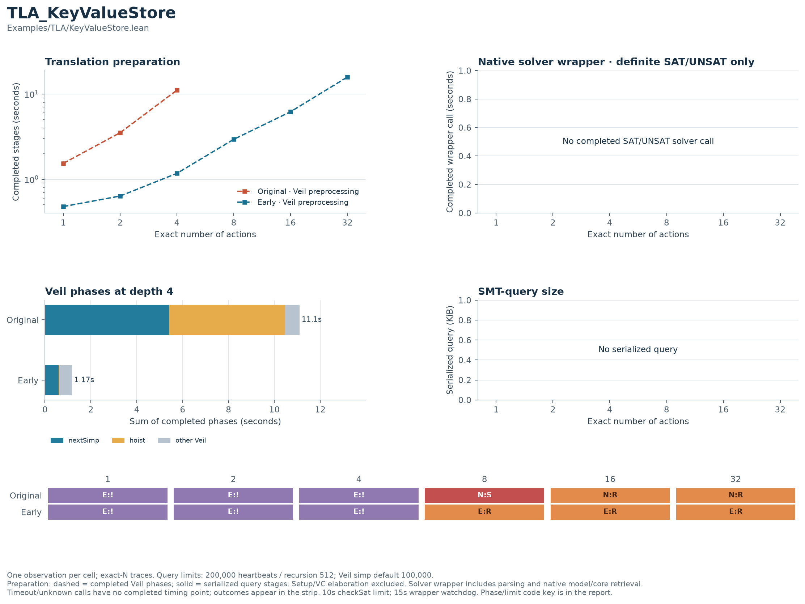
| Exact actions | Original | Early introduction |
|---|---|---|
| 1 | — | — |
| 2 | — | — |
| 4 | — | — |
| 8 | — | — |
| 16 | — | — |
| 32 | — | — |
A dash means no serialized query was emitted. Query hashes and exact byte counts are in queries.csv; these are the files replayed by the solver.
assert (∃ v1 v2 s, Chosen v1 s ∧ Chosen v2 s ∧ v1 ≠ v2)
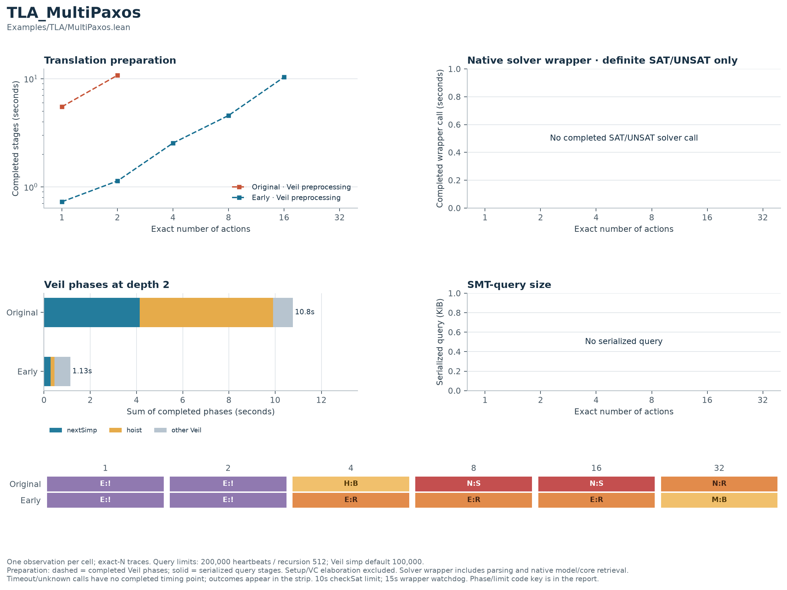
| Exact actions | Original | Early introduction |
|---|---|---|
| 1 | — | — |
| 2 | — | — |
| 4 | — | — |
| 8 | — | — |
| 16 | — | — |
| 32 | — | — |
A dash means no serialized query was emitted. Query hashes and exact byte counts are in queries.csv; these are the files replayed by the solver.
assert (∃ i j, i ≠ j ∧ pc i = cs ∧ pc j = cs)
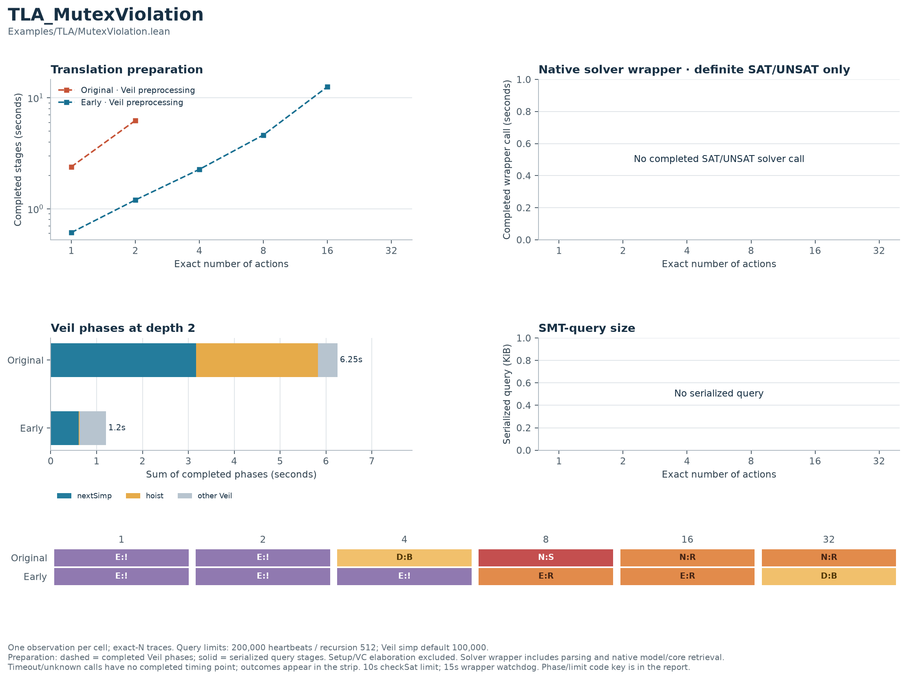
| Exact actions | Original | Early introduction |
|---|---|---|
| 1 | — | — |
| 2 | — | — |
| 4 | — | — |
| 8 | — | — |
| 16 | — | — |
| 32 | — | — |
A dash means no serialized query was emitted. Query hashes and exact byte counts are in queries.csv; these are the files replayed by the solver.
assert (¬ Linearizability)
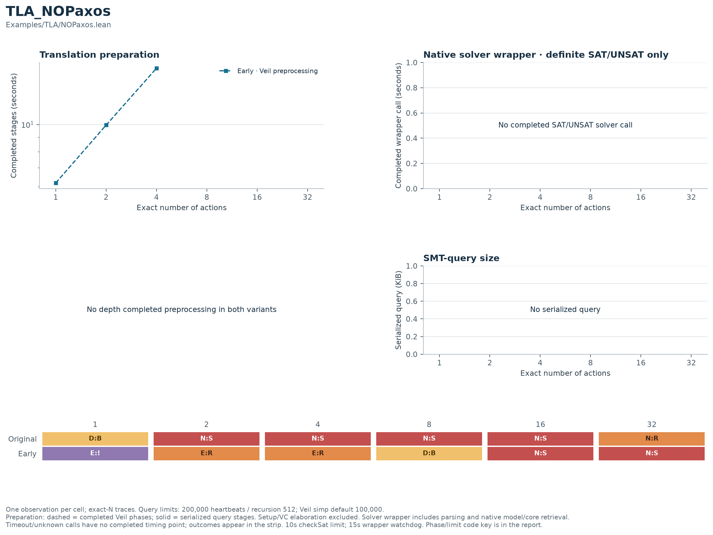
| Exact actions | Original | Early introduction |
|---|---|---|
| 1 | — | — |
| 2 | — | — |
| 4 | — | — |
| 8 | — | — |
| 16 | — | — |
| 32 | — | — |
A dash means no serialized query was emitted. Query hashes and exact byte counts are in queries.csv; these are the files replayed by the solver.
assert (∃ v1 v2, Chosen v1 ∧ Chosen v2 ∧ v1 ≠ v2)
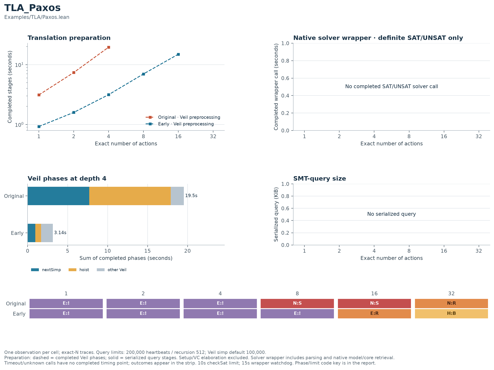
| Exact actions | Original | Early introduction |
|---|---|---|
| 1 | — | — |
| 2 | — | — |
| 4 | — | — |
| 8 | — | — |
| 16 | — | — |
| 32 | — | — |
A dash means no serialized query was emitted. Query hashes and exact byte counts are in queries.csv; these are the files replayed by the solver.
assert (∃ i j, i ≠ j ∧ lockcs i ∧ lockcs j)
| Exact actions | Original | Early introduction |
|---|---|---|
| 1 | SMT-LIB 5200 bytes | SMT-LIB 5200 bytes |
| 2 | SMT-LIB 8173 bytes | SMT-LIB 8173 bytes |
| 4 | SMT-LIB 14119 bytes | SMT-LIB 14119 bytes |
| 8 | SMT-LIB 26011 bytes | SMT-LIB 26011 bytes |
| 16 | — | SMT-LIB 50306 bytes |
| 32 | — | SMT-LIB 99090 bytes |
A dash means no serialized query was emitted. Query hashes and exact byte counts are in queries.csv; these are the files replayed by the solver.
assert (∃ i j, i ≠ j ∧ currentTerm i = currentTerm j ∧ pcState i Leader ∧ pcState j Leader)
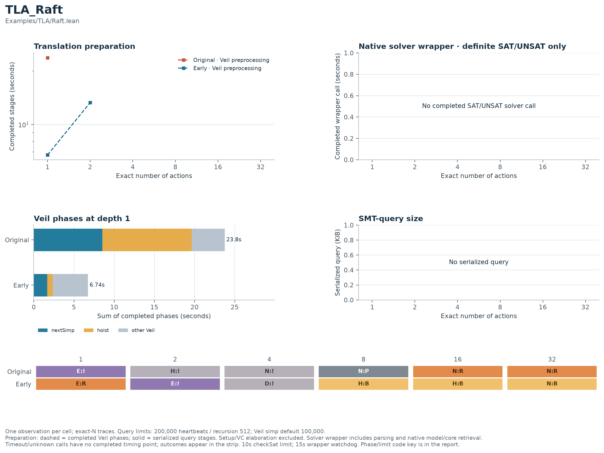
| Exact actions | Original | Early introduction |
|---|---|---|
| 1 | — | — |
| 2 | — | — |
| 4 | — | — |
| 8 | — | — |
| 16 | — | — |
| 32 | — | — |
A dash means no serialized query was emitted. Query hashes and exact byte counts are in queries.csv; these are the files replayed by the solver.
assert (∃ r g1 g2, guestTset.contains g1 (registered r) ∧ guestTset.contains g2 (registered r) ∧ g1 ≠ g2)
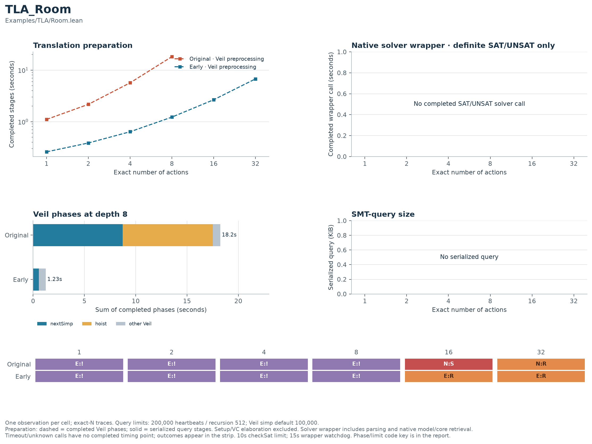
| Exact actions | Original | Early introduction |
|---|---|---|
| 1 | — | — |
| 2 | — | — |
| 4 | — | — |
| 8 | — | — |
| 16 | — | — |
| 32 | — | — |
A dash means no serialized query was emitted. Query hashes and exact byte counts are in queries.csv; these are the files replayed by the solver.
assert (¬ (∀ c1 c2 : client, c1 ≠ c2 → resSet.isEmpty (resSet.intersection (alloc c1) (alloc c2))))
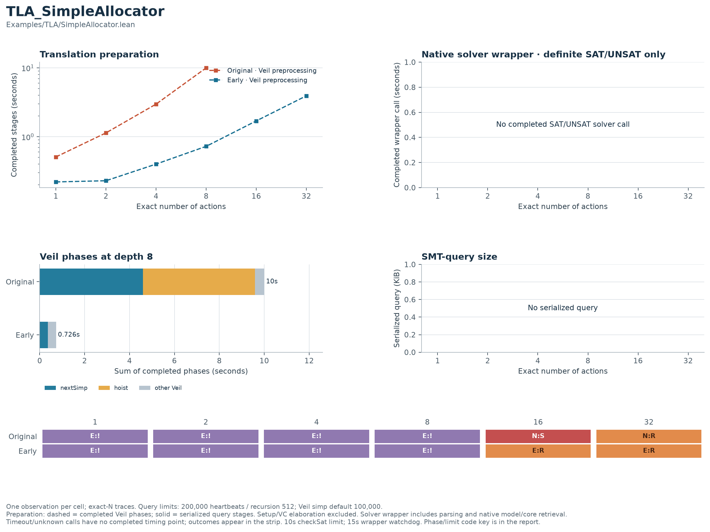
| Exact actions | Original | Early introduction |
|---|---|---|
| 1 | — | — |
| 2 | — | — |
| 4 | — | — |
| 8 | — | — |
| 16 | — | — |
| 32 | — | — |
A dash means no serialized query was emitted. Query hashes and exact byte counts are in queries.csv; these are the files replayed by the solver.
assert (at_light = false)
| Exact actions | Original | Early introduction |
|---|---|---|
| 1 | SMT-LIB 2974 bytes | SMT-LIB 2974 bytes |
| 2 | SMT-LIB 4272 bytes | SMT-LIB 4272 bytes |
| 4 | SMT-LIB 6868 bytes | SMT-LIB 6868 bytes |
| 8 | SMT-LIB 12060 bytes | SMT-LIB 12060 bytes |
| 16 | SMT-LIB 22674 bytes | SMT-LIB 22674 bytes |
| 32 | — | SMT-LIB 44002 bytes |
A dash means no serialized query was emitted. Query hashes and exact byte counts are in queries.csv; these are the files replayed by the solver.
assert (∃ rm1 rm2, (rmState rm1 == committed) ∧ (rmState rm2 == aborted))
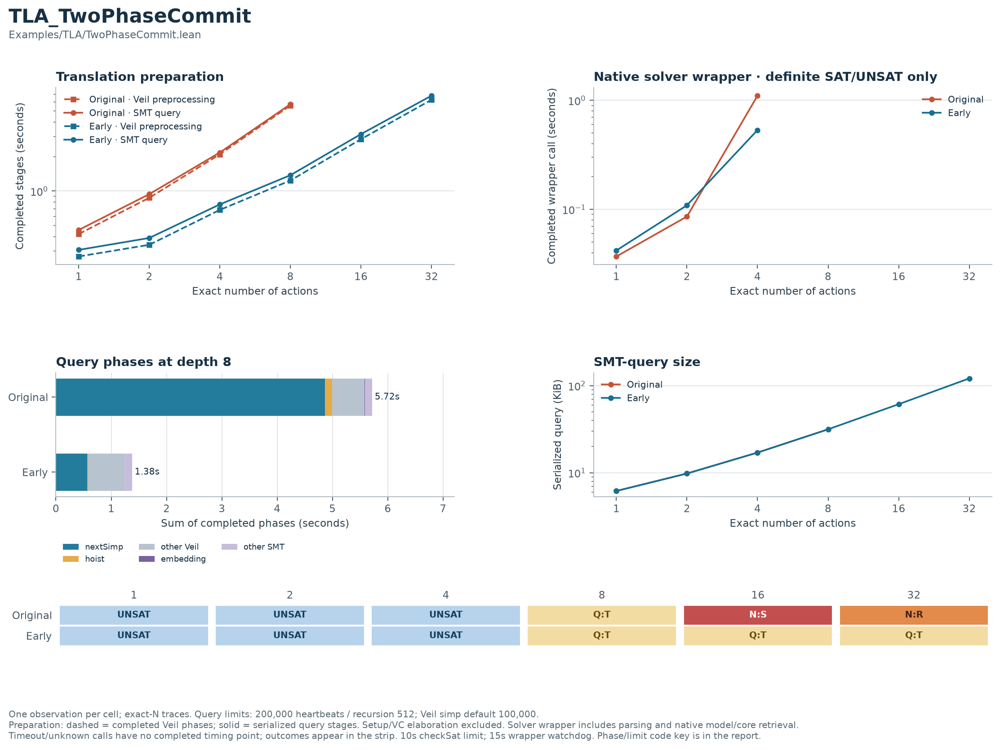
| Exact actions | Original | Early introduction |
|---|---|---|
| 1 | SMT-LIB 6334 bytes | SMT-LIB 6334 bytes |
| 2 | SMT-LIB 10045 bytes | SMT-LIB 10045 bytes |
| 4 | SMT-LIB 17467 bytes | SMT-LIB 17467 bytes |
| 8 | SMT-LIB 32311 bytes | SMT-LIB 32311 bytes |
| 16 | — | SMT-LIB 62773 bytes |
| 32 | — | SMT-LIB 124021 bytes |
A dash means no serialized query was emitted. Query hashes and exact byte counts are in queries.csv; these are the files replayed by the solver.
assert (¬ (∀ n1 n2 v1 v2, decision n1 v1 ∧ decision n2 v2 → v1 = v2))
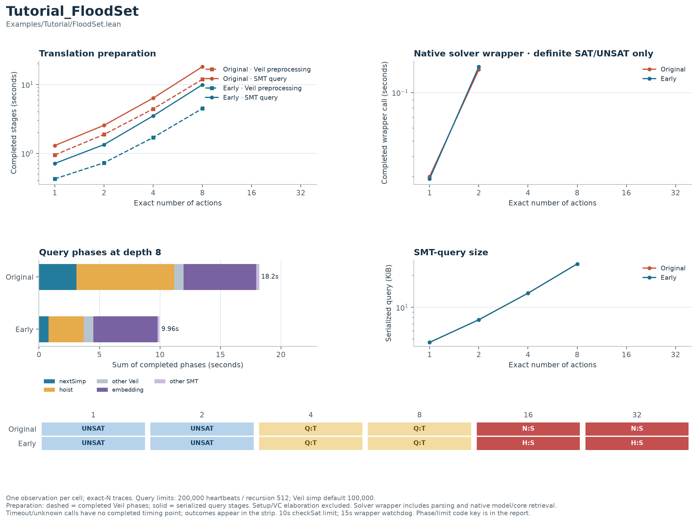
| Exact actions | Original | Early introduction |
|---|---|---|
| 1 | SMT-LIB 4791 bytes | SMT-LIB 4791 bytes |
| 2 | SMT-LIB 7830 bytes | SMT-LIB 7830 bytes |
| 4 | SMT-LIB 13931 bytes | SMT-LIB 13931 bytes |
| 8 | SMT-LIB 26307 bytes | SMT-LIB 26307 bytes |
| 16 | — | — |
| 32 | — | — |
A dash means no serialized query was emitted. Query hashes and exact byte counts are in queries.csv; these are the files replayed by the solver.
assert (∃ n1 n2, n1 ≠ n2 ∧ leader n1 ∧ leader n2)
| Exact actions | Original | Early introduction |
|---|---|---|
| 1 | SMT-LIB 3642 bytes | SMT-LIB 3644 bytes |
| 2 | SMT-LIB 5709 bytes | SMT-LIB 5713 bytes |
| 4 | SMT-LIB 9843 bytes | SMT-LIB 9851 bytes |
| 8 | SMT-LIB 18111 bytes | SMT-LIB 18127 bytes |
| 16 | — | SMT-LIB 35064 bytes |
| 32 | — | SMT-LIB 69064 bytes |
A dash means no serialized query was emitted. Query hashes and exact byte counts are in queries.csv; these are the files replayed by the solver.
assert (leader.length > 1)
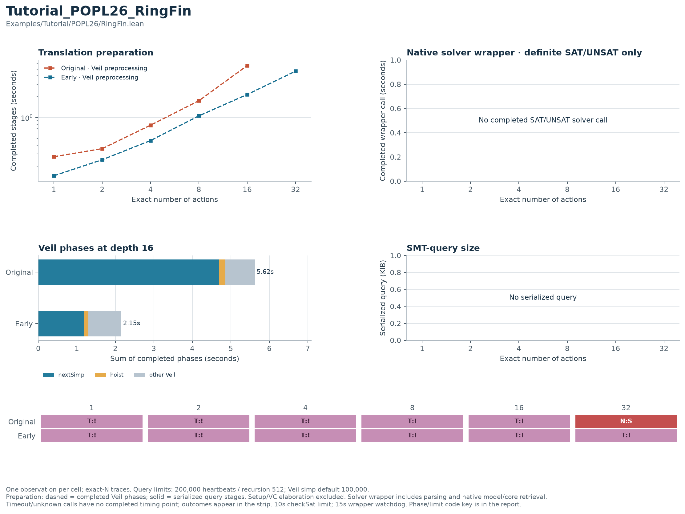
| Exact actions | Original | Early introduction |
|---|---|---|
| 1 | — | — |
| 2 | — | — |
| 4 | — | — |
| 8 | — | — |
| 16 | — | — |
| 32 | — | — |
A dash means no serialized query was emitted. Query hashes and exact byte counts are in queries.csv; these are the files replayed by the solver.
assert (leader.length > 1)
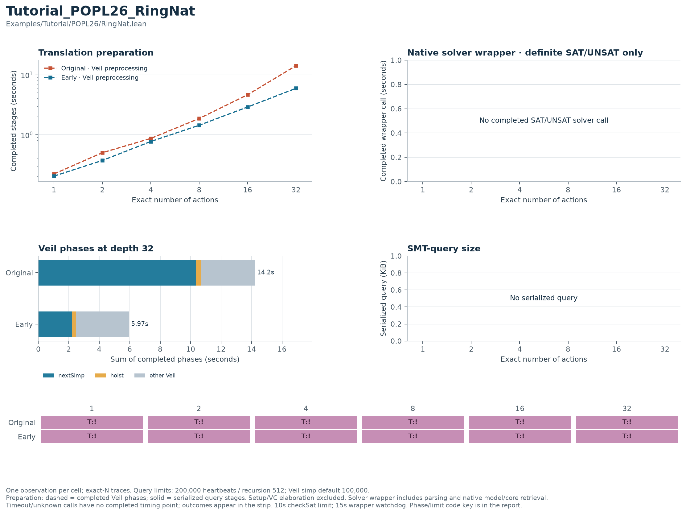
| Exact actions | Original | Early introduction |
|---|---|---|
| 1 | — | — |
| 2 | — | — |
| 4 | — | — |
| 8 | — | — |
| 16 | — | — |
| 32 | — | — |
A dash means no serialized query was emitted. Query hashes and exact byte counts are in queries.csv; these are the files replayed by the solver.
assert (∃ l1 l2, leader l1 ∧ leader l2 ∧ l1 ≠ l2)
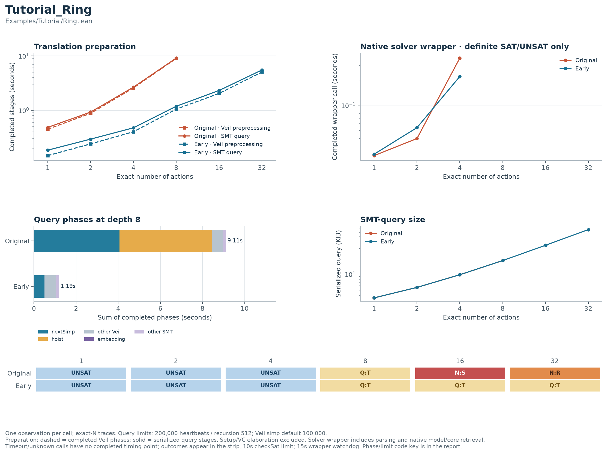
| Exact actions | Original | Early introduction |
|---|---|---|
| 1 | SMT-LIB 3668 bytes | SMT-LIB 3668 bytes |
| 2 | SMT-LIB 5761 bytes | SMT-LIB 5761 bytes |
| 4 | SMT-LIB 9947 bytes | SMT-LIB 9947 bytes |
| 8 | SMT-LIB 18319 bytes | SMT-LIB 18319 bytes |
| 16 | — | SMT-LIB 35448 bytes |
| 32 | — | SMT-LIB 69832 bytes |
A dash means no serialized query was emitted. Query hashes and exact byte counts are in queries.csv; these are the files replayed by the solver.
AMD EPYC 9645 96-Core Processor; 8 logical CPUs visible. Lean (version 4.32.0, x86_64-unknown-linux-gnu, commit 8c9756b28d64dab099da31a4c09229a9e6a2ef35, Release). Python 3.13.5. Exact dependency revisions, platform, and suite-log hash.
The implemented change is conservative early introduction of the data/type/instance prefix. Per-transition/context-based translation and downstream backend repairs discussed below are future proposals. The original LamportMutexV1 branch linked in issue #123 is unavailable, so this corpus does not establish that the exact original reproducer is fixed.
Inventory and query audit
Scope
manifest.json contains all 49 model-bearing Lean files under Examples at the
recorded source revision. The only excluded file is
Examples/StellarConsensus/SCPTheory.lean: it defines support theory, not a Veil
transition system. Its import is retained by the SCP benchmark.
All model variants remain separate, including tutorial, optimized, relational,
collection-based, and concrete implementations. Their path-based IDs avoid
collisions between repeated Veil namespaces such as Ring, FloodSet, NOPaxos,
AWSDnsRace, and TwoPhaseCommit. This is complete file coverage, not a claim of
49 independent protocol designs. Correlated tutorial Ring/FloodSet variants
must not be counted as independent evidence in statistical summaries.
Extraction
cut_line is the first excluded 1-based source line: the first active #gen_spec
or #time #gen_spec command. Copy original source lines[:cut_line-1], append
#gen_spec, then the generated trace, then end <module>. The generator strips
nested comments only to find commands; it does not rewrite the copied prefix.
All model definitions, theory assumptions, initialization, actions, ghost
predicates, safety declarations, and invariants preceding #gen_spec remain.
Later #model_check, #simulate, #gen_executable, invariant checks, manual proofs,
and existing trace invocations are omitted. A static check found no earlier
execution/verification commands in the selected prefixes.
Every chosen ghost predicate is defined before the extraction boundary,
including KVSnap.serialization and CC support definitions, NOPaxos.Linearizability,
KeyValueStore snapshot predicates, Paxos Chosen predicates, EWD840 termination
predicates, and Peterson.lockcs. The only extra model import is
Examples.StellarConsensus.SCPTheory; KVSnap also imports
Veil.Util.Permutations. Both compiled modules were present during inventory.
Query selection
Most rows negate one existing safety or invariant declaration. If a chosen
declaration is itself a conjunction, all its conjuncts are retained: this is
explicit for Ivy.Blockchain and Ivy.TwoPhaseCommit. Selecting the first named
safety declaration does not claim to check every other safety declaration in
that file. query_source identifies the precise property covered by each row.
Free uppercase variables introduced by Veil's source declaration syntax have
been replaced with explicitly quantified query variables. Ordinary logical,
Bool, or Nat negations are used where direct: e.g. a mutual-exclusion violation
is an existential pair of distinct holders, and a Nat bound violation is >.
No abstract collection laws are assumed when reformulating a predicate.
In particular, SimpleAllocator negates its original intersection/isEmpty
expression exactly: TSet does not supply an intersection-membership axiom,
so a shared-element query would not be an equivalent abstract specification.
KVSnap, KeyValueStore and TLA/NOPaxos preserve their complete ghost predicates;
list-based Ring variants retain their length property. TLA.TwoPhaseCommit
preserves the source Bool equality expressions.
Exceptions are deliberate and labeled:
- DieHard, RiverCrossing, Traffic: reach the existing puzzle objective,
expressed by negating the source's not-solved invariant/safety property.
- BcastByz: reach a correct process in AC (accepted) control state. The file
declares partition/cardinality sanity invariants, but no protocol safety
assertion; this is a meaningful protocol-progress query, not True.
- Raft: violate the documented BothLeader/MoreThanOneLeader election-safety
condition in the source comments. The file has no active safety invariant.
Interpretation
The harness inserts any N actions before the final-state assertion. This is
exactly N steps, not at most N. UNSAT can therefore reflect absence of any
length-N execution (e.g. a deadlock), as well as absence of a violating state.
These bounded outcomes do not prove the unbounded protocol invariant.
Concrete domain sizes and immutable-parameter assignments supplied later to
#model_check or #simulate are intentionally not imported. Symbolic queries
retain only the original model's theory assumptions. A SAT result can expose
an underconstrained symbolic parameter rather than the behavior of the
concrete example configuration. This particularly matters for Prisoners'
cardPrisoner and list-based Ring's topology. expected_status is null for every
row: the inventory does not assume that source properties or finite model
checks determine all these bounded symbolic outcomes.
Some examples intentionally use lists, arrays, finite/dependent types,
higher-order choices, collection dictionaries or enumeration functions that
the SMT backend may not support. Keep preprocessing, embedding, translation,
solver, and setup failures distinct; do not exclude a model merely because
its symbolic query fails. A formula/syntax error in the measurement query is
instead a harness defect and must be corrected before a result is retained.
Options and validation
source_options records every active prefix set_option, with original lines.
Examples include large heartbeat limits in Raft/NOPaxos/Bakery, trust=false
in Ivy.Ring, and grind+smt in AWSFixed. Retain these for source/model setup.
The runner's uniform trusted query profile explicitly overrides trust and
sets its documented query resource limits; it is not an untouched execution
of each source file's individual solver/resource configuration.
This inventory was independently audited against source and abstract-class
definitions without running Lean jobs. Operational elaboration/translation
validation belongs to the runner. source_sha256 and the frozen manifest hash
let the runner detect stale extraction boundaries or changed query choices.
Reproduction
python3 make_manifest.py --repo /path/to/veil --output /tmp/veil-symbolic-bmc
Do not regenerate/replace a manifest used by an active sweep. Preserve its
content hash together with the run metadata.
Dataset provenance and corrections The primary dataset is exactly 49 source files x six sampled exact depths (1, 2, 4, 8, 16, 32) x two tactic orders = 588 cells. The manifest hashes source files and fixes each selected assertion. Old means the previous tactic order on base eb41b59673a179ad05773ceca18667ba25b7f079, not the historical issue commit. The only production change is conservative early data introduction. The final primary run loads the native cvc5 plugin during extraction, uses Veil's production backwards-compatibility options and withoutRecover, and runs synchronous Lean elaboration. A preliminary extraction without the native plugin was discarded in full; none of its observations are in results/. The seven-model exploratory study is also separate and is not merged here. A later instrumentation audit found the helper's global `open Lean Elab ...` made two names visible to the model source: Lean.Elab.process and Lean.Position. This interfered with setup of BcastByz, MutexViolation and Room. An audit of 150 type/enum declarations (83 distinct names) found only those two newly visible matches. The correction encloses helper declarations and namespace opens in a section that ends before the original model source. The measured tactic bodies and selected queries are unchanged. The final audit also found that the first scoped helper revision left the external event-marker calls unqualified. Those commands reported unknown withOptions, disabling query-elaboration markers and the active-cell wall watchdog. That scoped cohort and all five controls were discarded and rerun with Lean.withOptions. The runner now rejects marker-command errors and a pipeline start without a query-begin event; the final validator checks that every attempted pipeline has that event. None of the other 552 primary cells were affected. Invalid scoped/control observations are excluded. All 36 cells for those three files were rerun with the corrected scoped helper and replace their invalid setup records in results/. Every repaired cell gets past setup; their remaining errors occur during actual query processing. Both the plain original Room prefix and scoped-helper Room prefix compile. Six additional depth-1 queries (old and early for AWSFixed, PaxosFirstOrder and Ring) were compared against the original valid primary observations; all six have the same normalized SMT formula. These checks are functional instrumentation validation, not extra timing repetitions in the primary grid. The original runner snapshot and the correction's runner snapshot/metadata are retained under results/. Corrected convenience runners are in runner/. Namespace audit and equivalence artifacts are included under provenance/. Invalid observations are excluded from this package. Per-cell checkpoints contain execution commands, original source paths/hashes, stage events and query hashes. The three repaired cohorts ran later than the original sweep; this is one more reason to interpret single-observation timings as approximate. Original absolute execution paths are retained as provenance, even for cells copied from namespace-repair/. Portable tools locate relocated artifacts by basename and validate recorded content hashes. Do not replace those paths in raw records and pretend they were the original execution locations. After extraction, each emitted query is replayed using a fresh native solver. Supplemental odd-depth and recursion-only controls live in controls/, never in the 588-cell primary dataset. Post-sweep functional backend probes live in diagnostics/; their whole-process times are not benchmark observations. The original issue's LamportMutexV1 source branch is unavailable. Existing corpus coverage and regression tests cannot establish the maximum depth of that exact unpublished/deleted model. See the report for observed translation and solver depths of the available examples, kept as separate measurements.
Supplemental controls: separate from the 588-cell primary sweep
All controls retain the primary selected assertion, trusted backend and native solver limits.
The recursion-only profile changes maxRecDepth from 512 to 10000, retaining maxHeartbeats200000,
Veil simp 100000 and the 60-second extraction watchdog. No control is merged into primary statistics.
aws-recursion
AWS_AWSFixed depth 8 early: solver_timeout [solver: solver_timeout]
Primary default: translation_failed [embedding: recursion]
Completed query stages: 19327 ms; solver wrapper: 10029 ms (timeout).
AWS_AWSFixed depth 8 old: solver_timeout [solver: solver_timeout]
Primary default: translation_failed [embedding: recursion]
Completed query stages: 27260 ms; solver wrapper: 10024 ms (timeout).
diehard-recursion
Puzzles_DieHard depth 32 early: solver_timeout [solver: solver_timeout]
Primary default: translation_failed [embedding: recursion]
Completed query stages: 8803 ms; solver wrapper: 10023 ms (timeout).
Puzzles_DieHard depth 32 old: solver_timeout [solver: solver_timeout]
Primary default: translation_failed [embedding: recursion]
Completed query stages: 14147 ms; solver wrapper: 10015 ms (timeout).
epaxos-recursion
TLA_EPaxos depth 1 early: translation_timeout [embedding: wall_timeout]
Primary default: translation_failed [embedding: recursion]
TLA_EPaxos depth 1 old: translation_timeout [embedding: wall_timeout]
Primary default: translation_failed [embedding: recursion]
flood-recursion
Synchronous_FloodSet depth 16 early: translation_failed [embedding: heartbeats]
Primary default: translation_failed [embedding: recursion]
Synchronous_FloodSet depth 16 old: translation_failed [hoist: heartbeats]
Primary default: translation_failed [hoist: heartbeats]
river-seven
Puzzles_RiverCrossing depth 7 early: sat
Completed query stages: 491 ms; solver wrapper: 22 ms (sat).
Puzzles_RiverCrossing depth 7 old: sat
Completed query stages: 2102 ms; solver wrapper: 23 ms (sat).
Interpretation:
RiverCrossing is SAT at exact depth 7 in both variants. The primary sampled even depths are
UNSAT. This is why largest sampled depth is not a bound covering every shorter execution.
AWSFixed at 8 and DieHard at 32 now emit queries in both variants, but all four solves time out.
FloodSet at 16 still fails: old in hoisting, early in embedding, both on heartbeat limits.
EPaxos at 1 now exhausts the 60-second pipeline wall cap in embedding in both variants;
it has not emitted a query. The watchdog kills the entire process group and restarts
the unattempted cell, retaining completed/failed cells. Limits expose different bottlenecks.
These selected controls support temporary recursion-limit mitigation for some models,
not a general recommendation or a claim of improved complete solving.
Raw sources, stage events, logs, exact option metadata and solver replay are in each
named controls/ subdirectory. The corrected runner rejects missing event markers.
The earlier control attempt with ineffective watchdog markers was discarded; see
DATASET_PROVENANCE.txt. These are the rerun observations with enforced caps.
Functional diagnostics after timed work
These are isolated reproductions and candidate experiments, not performance observations.
No production dependency source or .olean was edited. Only early introduction is shipped.
Trusted UNSAT probes legitimately warn that the declaration uses sorry; they do not claim
kernel proof reconstruction. Minimal simp checks verify expressions/equality proofs and
absence of escaped locals, but are not substitutes for a full untrusted regression suite.
AWSBuggyDependentOnly (exit 1; timeout=False)
Candidate active/original disabled; advances to cannot translate 0; no solver answer.
AWSBuggyFixedNat (exit 1; timeout=False)
Candidate active/original disabled; advances to cannot translate 0; no solver answer.
AWSBuggyWithDefaultOnly (exit 1; timeout=False)
Candidate active/original disabled; original congruence mismatch remains.
ActionFormMinimal (exit 0; timeout=False)
Equivalent imperative self-loop reaches trusted native UNSAT.
BuggyCircularBufferFixedNat (exit 1; timeout=False)
Advances to unsupported lambda fun n => n in BUFFER_ELEMS; no solver answer.
BuggyCircularBufferOriginal (exit 1; timeout=False)
Actual production tactic reproduces congruence mismatch at depth 1.
ChordRingMaintenanceProduction (exit 1; timeout=False)
Actual production tactic reproduces native SMT parser error at depth 1.
ChordRingMaintenanceTranslateDecide (exit 0; timeout=False)
Trusted native UNSAT at depth 1 after direct decide lowering.
MinimalDependentOnly (exit 0; timeout=False)
All three checks pass; dependency handling resolves the minimized defect.
MinimalFixedNat (exit 0; timeout=False)
All three expression/equality-proof and escaped-local checks pass.
MinimalOriginal (exit 1; timeout=False)
Scalar control passes; both dependent Fin cases reproduce congruence type mismatch.
MinimalWithDefaultOnly (exit 1; timeout=False)
Dependent cases still fail: transparency alone is insufficient.
PaxosEPRDiagnostic (exit 1; timeout=False)
Persistent trace confirms residual decide and a valid incoming DecidableEq.{1}.
PaxosEPRProduction (exit 1; timeout=False)
Actual production tactic reproduces DecidableEq universe-count error at depth 1.
PaxosEPRTranslateDecide (exit 0; timeout=False)
Trusted native UNSAT at depth 1; candidate not validated for untrusted reconstruction.
ProductionAWSBuggy (exit 1; timeout=False)
Actual production tactic reproduces congruence mismatch at depth 1.
ReliableBroadcastDiagnostic (exit 1; timeout=False)
Persistent trace exposes enclosing byz.ext.toTransitionDerived wrapper.
ReliableBroadcastProduction (exit 1; timeout=False)
Actual production tactic reproduces unsupported DecidableEq lambda at depth 1.
ReliableBroadcastTranslateDecide (exit 1; timeout=False)
Same lambda failure remains; residual action wrapper is a distinct problem.
SuzukiKasamiProduction (exit 1; timeout=False)
Actual production tactic reproduces native SMT parser error at depth 1.
SuzukiKasamiTranslateDecide (exit 0; timeout=False)
Trusted native UNSAT at depth 1 after direct decide lowering.
TransitionFormMinimal (exit 1; timeout=False)
Self-loop retains toTransitionDerived and fails on a field-representation lambda.
UniverseDependencyProbe (exit 0; timeout=False)
Valid DecidableEq.{1} loses its universe levels through NameSet dependency reconstruction.
Unrun: AWSBuggyFixedNatRat and the optional Rat/Real helper. No Rat failure is claimed.
Candidate prototype fixes still need kernel-checked proof reconstruction, trusted SAT
model decoding, broader dependent-type coverage, and complete end-to-end regressions.
Probe preparation corrections: the first module-local simproc declaration lacked public
visibility; a later helper section restored the original simproc erasure on exit. Retained
full-model Nat probes erase the original outside that section and explicitly check both
original absence and candidate activation. Earlier invalid probes are excluded. The
observer uses persistent query tracing because ordinary logInfo can roll back on failure.
The minimal trace probe was corrected to avoid a reserved trace name and uses multiline
trace syntax. Only corrected execution records are included here.
Self-contained .lean files are the tested artifacts. Some source comments retain their
original preparation wording; this README and the hashed JSON execution records state
what actually ran. Headerless include files are design templates; use the complete tested
module files for reproduction, including visibility/scope and candidate-activation checks.
Launch from the recorded worktree (or matching checkout):
lake env lean -D Elab.async=false --plugin=.lake/packages/cvc5/.lake/build/lib/libcvc5_cvc5.so PATH_TO_PROBE
Whole-process times in checkpoints include imports/setup/printing and must not be mixed
with stage benchmarks. The wrapper caps a functional probe at 90 seconds.
Trusted symbolic BMC extraction/replay audit ========================================== Scope This audit compares run.py HELPER/TAIL/REPLAY, used by run_batch.py and solve_batch.py, with the checked-out production Veil/lean-smt sources. It is a static audit plus the runner's bounded smoke comparisons; it is not a formal equivalence proof for the instrumentation. The sweep tests trusted query generation and solver outcomes, not kernel proof reconstruction or counterexample rendering. The manifest SHA256 is 6ec18dcb816fd8909801f14ea93bf80f726c4acdcdaf198f79476b1cd6fce8f5. Veil preprocessing The old and early variants execute the same existing elabVeilBmc stages; only early introduces the leading data/type/instance telescope, stopping before a proposition-valued binder. The helper implements the production conservative algorithm, including instantiateMVars, consumeMData, isProp, intro1 under tactic.hygienic=false, and recursion under goal.withContext. Both retain the later veil_intros. inferNonemptyIfUntrusted is omitted because the sweep explicitly uses veil.smt.trust=true; that production helper is a no-op in this configuration. A final audit correction wrapped both instrumentation evalTactic calls in withoutRecover, matching Veil/Frontend/DSL/Tactic/Core.lean:104–108. This prevents a recovered tactic error from being treated as a completed stage. Phase instrumentation skips subsequent stages after the goal closes; a closed negated-reachability goal is recorded as discharged/UNSAT without inventing an SMT query. The measurement declaration is deliberately aborted after extraction, so it neither admits a theorem nor claims a proof. Trusted SMT path Veil/Frontend/DSL/Tactic.lean:11–35 selects getPropsInContext hints and sets trust=true, embedBool=false, model=true, a timeout, finite-model-find=true, nl-ext-tplanes=true, and enum-inst-interleave=true. The default Smt.Config values additionally select mono=false, intros=true, normalize=true and embeddings=true. The sweep fixes the trusted/query options explicitly. The extraction backend now runs inside Veil.withBackwardsCompatibility, matching elabVeilSmt. This installs both backward defeq options from Veil/Util/Meta.lean:89–94. An earlier smoke helper omitted the wrapper; that omission was repaired before the complete sweep. Corrected-wrapper Ring and Traffic smoke queries matched their preceding query content, and the AWSBuggy failure also reproduced with the actual production veil_bmc tactic. In .lake/packages/smt/Smt/Tactic/Smt.lean:190–235, the production sequence is duplicate goal, cleanup retaining collected free variables from hints, pushHintsToCtx, intros, negateGoal, normalize, embeddingWithConfig with embedBool=false, genUniqueFVarNames, prepareSmtQuery, and set-logic ALL. The extraction helper follows that order and preserves each step's mv/hs. Each step runs in its goal's context. The helper omits applySteps' composed hypothesis map and async UI tracing. Neither feeds query generation: the map is consumed later by proof/core/model reconstruction. Hint elaboration qualification The helper calls getPropsInContext and resolves those local identifiers through getFVarIds, then passes their Expr.fvar expressions to cleanup. Production sends the same identifier list through Smt.Tactic.elabHints (.lake/packages/smt/Smt/Tactic/Smt.lean:385–433). For ordinary local proposition hypotheses, Auto.Prep.elabLemma returns the same local fvar; there are no user-supplied arbitrary terms or global lemma hints in this benchmark. Both paths use getPropsInContext's filtering/deduplication. This is a narrow frontend qualification, not a claim of equality for every possible Lean environment: elabSmtHintElem has a special branch that expands equation lemmas if an exact identifier also names a global non-Prop definition. A suitably shadowed identifier could therefore differ from direct local resolution. The sweep does not intentionally construct such shadowing, and no such discrepancy was observed in smoke comparisons; static inspection alone is not an exhaustive per-local-name collision test. Production also uses `open Classical in`; its source comment identifies proof reconstruction/Decidable synthesis as the reason. Bare local fvar lookup in the extraction helper does not synthesize those proofs. Solver replay Exact serialized query files include check-sat. Replay removes that command and passes the remaining query to Smt.solve, as production passes its cmds without check-sat. Replay uses defaultSolverOptions plus the same three extra options above, timeout=some 10, and proof production=false, matching the trusted production call at Smt/Tactic/Smt.lean:233–235. The timeout is the benchmark's explicit cap, not a claim about each source file's setting. Query hashes are checked before replay. SAT/UNSAT/unknown/error are distinct. Solver time excludes model setup, Lean import, serialization, and subsequent model reconstruction; process watchdog failures are distinct from native solver unknown/timeout. Batch setup/wall time is stored separately. Interpretation limits Production trusted UNSAT normally admits the goal, and production SAT may reconstruct/render a counterexample. This harness does neither. A solver verdict establishes the outcome for the emitted first-order query, not a kernel-checked proof or successful frontend counterexample extraction. Source model setup options are retained; per-query heartbeats/recursion and trusted finite-model-finding options are uniform benchmark overrides. The commands use symbolic model parameters constrained by the theory, not the concrete domains/parameter values in later #model_check calls. See INVENTORY_METHODS.txt for exact-N semantics, selected property scope, per-model query provenance, and why all expected_status fields are null. See BACKEND_FINDINGS.txt for the independently reproduced AWSBuggy failure.
Nat/Fin embedding: reproduced defect and limits of the candidate repair
Observed production failure
AWSBuggy's exact manifest depth 1 query (`assert dns_valid = false`) fails in
actual production `by veil_bmc`, independently of the benchmark instrumentation.
Both tactic orders fail in the primary sweep. The exception is an application
type mismatch at implies_congr_ctx. No query or solver verdict is produced.
Minimized, validated cause
The original standalone embedding simplifier fails on the closed proposition:
forall z:Int, z>=0 -> forall h:z.toNat<10, P (Fin.mk z.toNat h)
for an opaque P : Fin10 -> Prop. A scalar Nat-to-Int control passes. Simplifying
the inner bound under a fresh proof hp of z>=0 inserts a transport depending on
hp into the Fin argument. The rewritten consequent therefore depends on hp,
but the current simproc uses nondependent implication congruence and returns
the raw consequent without binding that new dependency.
Smt/Preprocess/Embedding/Nat.lean:285–295 is the offending pattern. Lean4.32's
own simpArrow (Lean/Meta/Tactic/Simp/Main.lean:333–361) checks for this dependency,
constructs mkForallFVars when necessary and uses mkImpDepCongrCtx, with the
expected transparency mode. Rat.lean:314–324 has an analogous source pattern,
but no actual Rat failure has been established.
Attribution checks
MinimalOriginal: scalar passes; both dependent Fin cases fail.
MinimalWithDefaultOnly: same dependent failures. Transparency alone is insufficient.
MinimalDependentOnly: all three cases pass expression/equality-proof checking,
including explicit checks that no free variable escapes the closed input.
MinimalFixedNat (dependency branch plus withDefault): all three pass those checks.
Thus dependency handling is necessary for these reproductions; withDefault is
consistent with Lean's implementation but is not the explanation of this failure.
Full model results, with candidate activation explicitly checked
ProductionAWSBuggy: original congruence type mismatch.
AWSBuggyWithDefaultOnly: original congruence type mismatch remains.
AWSBuggyDependentOnly / AWSBuggyFixedNat: remove that error, then fail later at
translation with `cannot translate 0`. No complete SMT query/answer is claimed.
BuggyCircularBufferOriginal: congruence type mismatch.
BuggyCircularBufferFixedNat: removes it, then translation rejects
`fun n => n ∈ BUFFER_ELEMS` as an unsupported lambda.
Each retained full-model candidate checks that the original contextual Nat
simproc is disabled and the candidate is active before the query. Earlier
probes with module-visibility/scoped-erasure defects were discarded. Sources,
hashes, exits and logs are retained under diagnostics/, separately from timings.
What this establishes
There is a concrete dependency-congruence bug and a small tested repair direction.
It is not yet a complete AWS or circular-buffer fix, nor proof that all 49 early
embedding type-mismatch cells share this cause. Preserve nonnegativity and Fin
bounds; inspect/lower residual dependent Fin constructions and subtype predicates
after the congruence fix rather than dropping guards or permitting arbitrary
lambdas. A literal-translation error by itself does not establish its full cause.
Before changing the dependency, add a kernel-checked minimized equality theorem,
full trusted SAT/UNSAT cases, untrusted reconstruction and model-decoding tests,
plus dependent numeric/function domains. The current Meta expression/proof checks
and trusted downstream probes do not supply all of those guarantees. No backend
candidate is installed by the early-introduction implementation.patch.
Concrete candidate for the confirmed AWSBuggy embedding failure
=============================================================
Status: the minimized dependent Fin failure is now reproduced and the
candidate dependency branch passes expression/equality-proof checks. The
withDefault-only variant does not fix it. Full AWS and circular-buffer probes
advance past the original congruence failure but still fail at later translation
boundaries. No complete backend fix is claimed. See BACKEND_FINDINGS.txt and
DIAGNOSTICS_README.txt for final outcomes; this document retains the repair design.
Strong source-level correspondence
.lake/packages/smt/Smt/Preprocess/Embedding/Nat.lean:285–296 implements a
contextual implication simplifier: simplify antecedent p, add a fresh proof
hp of the result, simplify q using hp, then build implication congruence.
It always uses mkImpCongrCtx and returns a raw forallE with rq.expr as body.
Lean4.32's own Lean/Meta/Tactic/Simp/Main.lean:333–361 implements essentially
the same operation but includes the missing dependency branch:
if rq.expr.containsFVar hp.fvarId! then
expr := mkForallFVars #[hp] rq.expr
proof := withDefault (mkImpDepCongrCtx rp.proof (lambda hp => rq.proof))
else
expr := e.updateForallE! rp.expr rq.expr
proof := withDefault (mkImpCongrCtx rp.proof (lambda hp => rq.proof))
Its comment explains why the default transparency is required when building
the congruence application. AppBuilder.lean:691–695 supplies both builders.
Init/SimpLemmas.lean:105–111 supplies the exact correctness theorem:
p1 = p2 → (∀ h:p2, q1 = q2 h) →
(p1 → q1) = (∀ h:p2, q2 h).
This is directly relevant to the production error: its actual argument has
type ∀a:f≥0, q1 = q2(a), but implies_congr_ctx expects f≥0 → ?q1 = ?q2 with
a nondependent ?q2. The error includes transported Fin bound proofs using
Int.toNat_of_nonneg a. Merely abstracting the equality proof into a lambda
does not make the rewritten proposition independent of a.
Rat.lean:314–325 has the same omission. Correcting it consistently is a
plausible companion change, but AWS does not establish a Rat failure.
Repair variants
A. Dependency-aware congruence (preferred candidate): mirror Lean's own
branch and withDefault calls. This both binds the fresh proof in the
resulting expression and proves the dependent equality. The standalone
helper also checks e.isArrow, because it does not instantiate q for an
originally dependent input binder. Lean's ordinary simpForall already
handles original dependent proof binders with forall_prop_domain_congr
(Main.lean:365–410); do not send their raw loose-bound body to this helper.
The minimized tests validate this missing case; the full-model tests show
that it is not sufficient for the complete AWS query or all embeddings.
B. Conservative fallback: if rq.expr depends on hp, abandon the contextual
result and let ordinary simplification continue, or simplify q again
without the fresh lemma and use ordinary implication congruence. This
avoids an invalid escaping expression and preserves the original formula.
It may retain Int.toNat/conditional terms or proof transports that the
downstream translator cannot handle, so avoiding the exception is not
equivalent to restoring complete SMT support. Returning `.done` with e
also skips useful child normalization; returning `.continue` is less
invasive but needs care to avoid revisiting the same custom rule forever.
The discarded contextual result must not leak its fresh-lemma cache.
C. Force nondependent congruence by erasing hp from the expression, treating
all proof fields as interchangeable without transport, or dropping the
nonnegativity/Fin-bound premise is not a valid repair. Proof irrelevance
only compares proofs of the same proposition; rewriting a binder's domain
changes the type of proof fields and requires the correct transport.
Prepared validation artifacts
aws-embedding-candidates/MinimalOriginal.lean and MinimalFixedNat.lean
use the candidate shape
∀ z:Int, z≥0 → ∀ h:z.toNat<10, P (⟨z.toNat,h⟩ : Fin10).
Simplifying h's domain under z≥0 can introduce a transport using that fresh
proof into P's Fin argument. An opaque P prevents the constructor being
trivially discarded. A scalar control and an extra-antecedent variant are
included. These triggers now reproduce the failure and have been tested against all
four attribution variants; see BACKEND_FINDINGS.txt.
aws-embedding-candidates/AWSBuggyFixedNat.lean preserves the original model,
query, imports, options and actual `by veil_bmc`, adding only the local
simproc replacement. AWSBuggyFixedNatRat.lean separately imports Smt.Real
and installs both replacements; its different environment is explicit.
The Nat-only candidates were validated after timed measurements. The Rat/Real
companion remains unrun and is not a confirmed fix.
Attribution variants are also prepared: MinimalWithDefaultOnly.lean and
AWSBuggyWithDefaultOnly.lean retain the nondependent congruence/output form
but add withDefault; MinimalDependentOnly.lean and AWSBuggyDependentOnly.lean
add dependent output abstraction/congruence but omit withDefault. The full
Lean recipe changes both, so success of the combined fix cannot by itself
identify the causal omission. Compare these variants, including expression
type correctness and escaped-local checks, before attributing the failure.
Proof, query and model implications
The preferred repair replaces one existing implication with a dependent
implication over the same nonnegativity proof; it does not add an independent
data variable or remove a bound. The enclosing simpTarget equality transports
the proof obligation. Nonetheless, a newly explicit dependency can expose a
later unsupported proof binder/Fin constructor to translation. Confirm the
entire emitted query and solver outcome, not only the local proof builder.
Embedding.lean:83–108 reverts/introduces variables and builds its hypothesis
map positionally, accounting for added nonnegativity assumptions. The repair
should preserve the expected telescope positions, but validate these maps
and untrusted proof reconstruction rather than infer that a local equality
fixes all downstream bookkeeping. Trusted success alone does not establish
kernel proof reconstruction or successful trace/model decoding.
Validation order: original/fixed small simplification; original/fixed full
production AWS at depth1; inspect any changed downstream failure; trusted
SAT/UNSAT query replay; untrusted theorem with kernel check and no sorryAx;
then finite/dependent examples and the Rat counterpart. Ensure expressions
and equality proofs contain no escaped fresh fvars and preserve Fin bounds.
Source paths
Lean source root used for the comparison:
/home/george/.elan/toolchains/leanprover--lean4---v4.32.0/src/lean/
Veil checkout source prefix:
/home/george/src/veil-issue-123/
See BACKEND_FINDINGS.txt for the confirmed original production log/hash.
Universe dependencies and residual decide: confirmed diagnoses
Production confirmation
Actual production `by veil_bmc` reproduces PaxosEPR's depth 1 error:
incorrect number of universe levels DecidableEq
The primary old and early orders both encounter it. Every early sampled depth
through 32 fails at this boundary. It is not caused by early introduction.
UniverseDependencyProbe.lean starts with valid DecidableEq.{1}, translates it,
obtains the name-only dependency, reconstructs it using the existing Query
routine's mkConst name, and confirms that inferType rejects the lost universe
arguments. This standalone probe passes. It isolates a real bookkeeping defect,
independent of whether the solver should support DecidableEq itself.
Source cause
Smt/Translate.lean:42 uses a NameSet for constant dependencies. The generic
const branch at 155–157 discards the actual universe levels. The expression
translation cache propagates this name-only payload. Translate/Query.lean:61–69
recreates each unknown constant with mkConst nm, supplying zero universe levels;
buildDependencyGraph at 237 then infers the type of this malformed expression.
A valid polymorphic constant thus becomes an invalid Lean term.
Confirmed model-level precursor
Production query tracing shows PaxosEPR's left_rnd update retaining:
Decidable.decide (old-left-rnd = true OR NOT order-relation) instance
The instance contains instDecidableEqBool and Classical.propDecidable. Generic
application traversal follows these computational arguments, eventually reaching
DecidableEq. The source left_rnd update uses decide; Translate/Bool.lean has no
dedicated translator for it in this dependency revision.
The persistent observer trace records incoming constants and residual terms;
functional-diagnostics/PaxosEPRDiagnostic.log retains the full context.
Tested trusted-only candidate
TranslateDecide.inc.lean recognizes decide p instance and translates p directly
to the SMT Boolean term. Both Lean Bool and Prop use SMT Bool in this trusted
encoding. The decision procedure is a proof-computation implementation detail,
not an additional logical variable to serialize.
With that standalone translator, the actual depth 1 production tactic finishes
UNSAT for PaxosEPR. The same candidate also gives UNSAT for ChordRingMaintenance
and SuzukiKasami, whose original scripts fail parsing with a dependent
Decidable.decide declaration in sort position. These three probes exit0 with
the expected trusted-mode `declaration uses sorry` warning: they establish
native trusted outcomes, not reconstructed kernel proofs. No dependency source
or compiled library was changed, and the candidate is not in implementation.patch.
ReliableBroadcast still fails with a DecidableEq lambda. Its enclosing term is
the unnormalized byz.ext transition wrapper, not a residual decide application.
See TRANSITION_FORM_FINDINGS.txt. The negative candidate result is useful evidence
that these failures should not be assigned one blanket cause.
Required production fixes
1. Preserve instantiated constant Exprs (name and actual universe arguments)
through dependency collection, caches, graphs and symbol generation. Update
custom translators/datatype handling consistently. Do not replace missing
levels with unrelated fresh metavariables. Preserving levels fixes malformed
terms but is not full polymorphism support: different applied type/instance
arguments can share universe levels while requiring different SMT signatures.
Use tested monomorphic instance identities, or reject unsupported inputs clearly.
2. Add exact decide lowering with tests for nested Bool/Prop uses, conditionals,
equality, arbitrary valid Decidable instances, and trusted SAT as well as UNSAT.
Validate untrusted reconstruction and model-value correspondence. Trusted
successes on these three examples do not establish all of those properties.
Do not simply filter DecidableEq out of dependencies while leaving an undeclared
computational application in the formula.
3. Reject residual dependent/polymorphic computational types at a clear boundary
before emitting invalid sorts. The current universe-count and parser exceptions
obscure the original Lean term and invite irrelevant resource-limit increases.
List-level universe failures and German's residual Type need separate support
work; a decide translator is not a general solution for them.
Artifacts and interpretation
Production, observer, minimized dependency and candidate sources are under
diagnostics/paxos-universe-candidates in the delivered package. JSON checkpoints
record source hashes and commands; logs are under diagnostics/functional-diagnostics.
Diagnostic whole-process times are not performance samples. The first observer
used rollback-prone logInfo; the retained rerun uses persistent query tracing.
See DIAGNOSTICS_README.txt for every executed probe and explicit unrun candidates.
Emitted text can still be rejected by cvc5 The primary sweep emits 15 scripts that cvc5 rejects before solving: ChordRingMaintenance: old depths1,2; early depths1,2,4,8,16. SuzukiKasami: old depths1,2,4; early depths1,2,4,8,16. All report: Expected SMT-LIBv2 sort constructor, got `(` (LPAREN_TOK). These count as emitted queries and solver errors, never as solved queries or valid SMT inputs. The same failure at depth1 in both variants makes this a pre-existing backend issue, not an early-introduction regression. The raw scripts contain the invalid declaration: (declare-sort Decidable 1) (declare-const Decidable.decide (forall ((p Bool)) ((Decidable p) -> Bool))) The second command places a dependent Lean function-type translation where SMT-LIB requires a sort. This is not a resource-limit failure. Generic translation must not silently serialize this form as a valid sort. Either lower its intended Boolean operation exactly, or reject unsupported dependent computational types with a diagnostic identifying the original Lean term before emitting a script. The direct decide translator in diagnostics/ is a targeted trusted-only candidate: translate decide p to the SMT Boolean formula for p, excluding its proof-computation instance from term dependencies. This needs the same reconstruction/model tests as discussed in PAXOS_UNIVERSE_FINDINGS.txt. A similar-looking residual is a reason to test the candidate on both models, not proof it fixes all related failures. Post-sweep production probes reproduce both parser failures, and the standalone decide candidate reaches UNSAT at depth1 for both models. These are trusted-only checks; no kernel reconstruction or SAT model decoding is established by them. Full results are recorded in DIAGNOSTICS_README.txt. Reporting consequence: query emission, successful SMT parsing, and a definite solver answer are distinct milestones. The report retains parser errors in the outcome strips and excludes their elapsed time from completed-solver curves.
Semantics and paired-query audit
The implementation moves only ordinary introduction of the outer data/type/
Type-valued-instance prefix before nextSimp and existential hoisting. A goal
forall parameters, Not(trace parameters)
becomes the same Not(trace parameters) goal under arbitrary local parameters.
The introduction rule is exact. It neither chooses fixed values nor reorders
internal quantifiers nor discards a transition or premise. Proof-domain binders
remain in the target until their domains are normalized, and the original later
intros/hoisting/destruction/backend path remains. This restriction fixes the
regression found with unrestricted early intros on a higher-order proof header.
The tests exercise trusted and untrusted SAT/UNSAT with function-valued picks,
including an explicit untrusted theorem whose axioms are only propext,
Classical.choice and Quot.sound. A second kernel-checked theorem covers the
higher-order proof header. The default-limit depth32 regression reaches a real
UNSAT solver result. The full VeilTest build passed 1226 jobs.
The primary sweep has 92 pairs where both variants emit text. Of these, 83 have
identical command sets after command ordering and implication currying. Nine
require additional elementary logical identities:
- Ivy_TwoPhaseCommit depths1,2,4,8: the final assertion uses exists x, not P x
on one side and not (forall x, P x) on the other, with bound-name changes.
- RiverCrossing depths1,2,4,8,16: one side retains implications with conclusion
true inside an action branch. Those conjuncts are tautologies.
These are expected differences in normalization, not changed trace constraints.
compare_logical_forms.py performs a second reproducible check on all pairs:
alpha-normalize bound variables with scope-aware identities, expand implication,
use classical quantifier negation/De Morgan/double negation, and simplify Boolean
identity/absorbing constants. It does not change solver inputs, reorder quantifier
prefixes, erase declarations, or equate unrelated free variables. Its boundary
checks reject capture, forall/exists swaps, dropped constraints and p versus not p.
All 92 pairs have identical normal forms under this second check, with no
remaining differences. The result is recorded in
query-comparison/logical.{json,csv}; thus all 87 solver-accepted paired inputs
also match. The remaining five pairs are invalid scripts, as qualified below.
This comparator is not an SMT type checker. Five of the 92 paired scripts are
rejected by cvc5 for an invalid Decidable.decide declaration (two models). They
must not be counted as solver-accepted inputs merely because their texts match.
The remaining 87 paired scripts were accepted by the native solver; some checks
then timed out. See SMT_PARSER_FINDINGS.txt for the invalid-script diagnosis.
There are no contradictory paired definite SAT/UNSAT answers. Agreement of
solver answers is useful regression evidence, not the proof of equivalence.
Preserving semantics does not guarantee preserving solver heuristics or timing:
Simulate_ReliableBroadcast at depth4 returned UNSAT in 5907 ms with the old order
and timed out at 10022 ms with early introduction, even though the basic query
audit matches their normalized formulas. Command order and other presentation
choices may matter to cvc5; this single observation does not isolate which does.
The comprehensive benchmark uses the production trusted preprocessing and native
solver wrapper, but omits Lean proof reconstruction and trace rendering. Those
are covered by separate production regression tests, not inferred for every
benchmark case. Existing backend encoding/support limitations remain.
Transition-form declarations need a certified normalization bridge
Confirmed production evidence
ReliableBroadcast depth 1 fails with a residual lambda implementing DecidableEq.
The traced enclosing term is more informative than that final error:
VeilM.toTransitionDerived (... byz.ext ... (fun a b => propDecidable ...) ...)
The source byz is a `transition`, not an imperative `action` and not a ghost
predicate. Its complete semantic wrapper survives the frontend normalization.
The translator then walks its computational typeclass arguments and rejects
the lambda. A decide translator alone cannot remove this enclosing wrapper.
Concrete source correspondence
Action/Elaborators.lean:1196–1216 registers the supplied transition relation
and calls defineProcedureCore with deriveTransition=false.
defineExternalVerificationDefinitions:1083–1085 skips AuxiliaryDefinitions.
defineTransition in that case. That skipped helper normally generates and
registers the act.ext.derived_eq equality in nextSimp at 634–650. The transition
source avoids recomputing its relation but still needs the exact bridge from
the action wrapper used by trace generation back to its supplied relation.
The residual production expression is consistent with this missing bridge.
Proposed fix
Generate a proved equality for the fully specialized transition-form action
and register it in nextSimp, retaining the original supplied relation and
appropriate frame/substate behavior. Prove it from Transition.toVeilM's
semantics and the generated WP, rather than teaching SMT to encode VeilM,
arbitrary typeclass lambdas, or higher-order action implementations.
Caution: Transition.toVeilM (Semantics/Definitions.lean:354–359) chooses a
substate, applies setIn to the existing state, assumes the relation, and sets
the result. An unrestricted theorem saying its derived relation equals any
arbitrary full-state relation for every IsSubStateOf instance needs additional
conditions and may be false. Prove the actual generated specialization, with
correct frame constraints; do not silently permit changes outside the chosen
substate. The BMC reflexive abstract-state instance is a useful first case.
Test a minimal transition-form self-loop against the equivalent imperative
action, complete ReliableBroadcast translation, transitions with proof/type
parameters, and untrusted kernel reconstruction. Add SAT tests where a
transition changes a field as well as UNSAT tests preserving a flag. Do not
infer that repairing one wrapper fixes all 16 residual-lambda cells in the
corpus; SCP/RingFin need their own enclosing-expression audits.
Minimized confirmation
TransitionFormMinimal declares a single Bool flag, initializes it false, and
uses `transition stay { flag' = flag }`. Its depth 1 trace asserting flag fails
on a field-representation lambda while stay.ext.toTransitionDerived remains.
ActionFormMinimal replaces that declaration with `action stay { pure () }`;
the equivalent query reaches trusted native UNSAT. Thus the gap reproduces
without ReliableBroadcast's complex types, ghost predicates or decide update.
These retained probes validate the missing normalization path, not a repair.
Their outcomes and hashes are listed in DIAGNOSTICS_README.txt.
This bridge is a follow-up design, not part of the early-introduction patch.
Remaining hoisting and recursion limits: static design notes
==========================================================
Scope and evidence
No new Lean jobs, benchmarks, or production edits were performed for these
notes. The concrete observations below are completed cells from the active
restarted 49-file sweep with the native launcher, read on 2026-10-19.
Proposed follow-ups are not implemented or validated. All source references
are relative to the Veil checkout. Final priorities await the complete sweep.
Blockchain, uniform maxHeartbeats=200000/maxRecDepth=512 query profile:
depth old outcome conservative early outcome
1 query emitted query emitted
2 query emitted query emitted
4 heartbeat exhaustion in hoist query emitted
8 simp steps in nextSimp simp steps in hoist
16 recursion in nextSimp simp steps in hoist
32 recursion in nextSimp heartbeats in hoist
Timing values from the earlier pre-plugin launch have been removed; use the
final native-launcher dataset for all performance numbers. The outcome table
above was rechecked against the restarted cells and remains unchanged.
See results/events/Ivy_Blockchain__d{depth}__{variant}__default.jsonl and
the corresponding cell JSON for exact outcomes and errors. A query emission
is not a solver verdict; the separate solver sweep supplies that evidence.
Other completed fresh cells show why the remaining work is broader than
hoisting: Ivy_NOPaxos early emits a query at depth 8, exhausts heartbeats in
smtSimp at 16, and reaches the simp-step cap in nextSimp at 32. AWS_AWSBuggy
early depth 32 exhausts heartbeats during destruct. The phases identify where
work stopped, not a full causal attribution or independent phase budget:
earlier work consumes the same Lean command heartbeat allowance.
Why this is a real remaining problem
Examples/Ivy/Blockchain.lean:70,83–84 havocs whole slices of relations.
The resulting choices have function types node→block→Bool,
block→time→Bool, and transaction→Bool. The havoc elaborator deliberately
preserves capital-index dimensions in the picked type
(Veil/Frontend/DSL/Action/DoElab/Assign.lean:535–574).
These are genuine nested existential function witnesses. Introducing the
outer State/Theory/argument parameters cannot remove them. The current
optimization removes two avoidable costs: repeatedly rebuilding the outer
data telescope, and the HO guard being triggered solely by outer structure
parameters. It leaves the actual existential normalizer unchanged
(Veil/Frontend/DSL/Tactic/Core.lean:1340–1378).
Veil/Frontend/DSL/Infra/Quantifiers.lean:291–296 calls a fresh full
existsQuantifierSimp pass whenever the guard finds HO quantification.
Its rules pull individual witnesses across conjunctions (189–192), across
alternatives with Nonempty premises (209–236), and past independent scalar
existentials by repeated adjacent swaps (152–175). Generic simp revisits
rebuilt expressions and constructs congruence proofs as each witness moves
toward the front of the whole trace. A linear final formula does not imply
linear normalization work or proof construction.
PRIOR SYNTHETIC EVIDENCE, NOT THE CURRENT 49-MODEL SWEEP:
Benchmarks/SMTTranslation/QuantifierHoistingResults.txt reports depth 32,
2 alternatives/transition, 1 function witness/alternative: 271848 global
simp steps versus 1279 summed per-transition steps. Both are from the prior
hoister-only experiment with raised heartbeat/recursion limits and a large
maxSteps budget. It excluded split/reassembly/context/kernel-check costs.
In that family, global steps grow roughly cubically while input/output
formula size is linear; this is measured behavior, not a universal bound
for all formulas or a measured end-to-end speedup for Blockchain.
Recommended next design: normalize one transition at a time
After introducing safe data parameters, an ordinary generated trace goal
has this form (TraceLang.lean:461–478, path below):
⊢ ¬(Assumptions(th) ∧ Init(th,s0) ∧ T1(s0,s1) ∧ ... ∧ Bad(sd))
Introduce the conjunction hypothesis and split only its outer ∧ structure:
hA : Assumptions(th), hI : Init(th,s0), hi : Ti(si-1,si), hB : Bad(sd)
⊢ False
Normalize each hi independently using the exact transition rules. If its
normal form is ∃wi, Mi(wi,si-1,si), eliminate that leading existential:
wi : Wi, hi : Mi(wi,si-1,si)
⊢ False
Submit all resulting hypotheses to ONE SMT query. The local functions wi
become declared function symbols, with first-order applications in Mi.
This is exact introduction, conjunction elimination, equivalence rewriting,
and existential elimination. The witnesses are fresh arbitrary locals for
proving False; in the SMT countermodel they are existential choices. Keep
the SAME si in neighboring transitions, preserve all guards/frame equations,
and retain all matrix constraints. Do not solve each transition separately:
locally satisfiable transitions need not form one globally consistent trace.
Keep action alternatives as ∨ inside each Mi. Splitting the action branches
into separate proof goals or enumerating action sequences recreates an
exponential search and complicates trace-result aggregation. For example,
((∃f, A(f)) ∨ B) ↔ ∃f, (A(f) ∨ B)
requires Nonempty(type(f)); otherwise the inactive branch B may lose models.
Bool-valued havoc functions are inhabited. General dependent choices may
not be. Existentials under conjunction need no added Nonempty premise.
A witness may only move past binders on which its type/body does not depend.
In particular, ∀x,∃f,P(x,f) cannot become ∃f,∀x,P(x,f). Preserve its scope,
or use a separately proved dependency-aware Skolem construction with the
right argument types; an unsupported higher-order residual must stay an
explicit limitation. Never erase dependencies or introduce arbitrary
default witnesses merely to make translation succeed.
Proof-valued trace-header binders require special care. The current prefix
introduction intentionally stops at them: their domains can themselves need
normalization. A prototype should support the ordinary no-proof-header form
first and fall back to the existing path for other forms, or normalize each
such domain before introducing it. Do not regress to unrestricted early
intros, which previously left unsupported HO quantifiers in hypotheses.
With a fixed transition formula, normalization work can become approximately
depth × local-normalization-cost; all end-to-end costs still need measuring.
Reuse simp contexts, avoid `simp at *` reprocessing previous transitions,
preserve action/state naming for model extraction, and retain proof maps.
The existing HoistingEquivalences.lean checks conjunction extraction,
inactive-branch emptiness, and forbidden crossing of universals.
Acceptance criteria must control the budget granularity
Fresh per-transition simp calls each receive a fresh maxSteps counter. At
a nominal 100000 steps per call, d calls permit up to d×100000 aggregate
steps where one old call allowed only 100000. Therefore "works deeper with
the same per-call maxSteps" is not alone evidence of an algorithmic win.
Record summed simp steps, total wall time, allocation/proof work, and the
command-level heartbeat budget. Retain 200000 command heartbeats for the
directly comparable profile, or document any changed allowance explicitly;
do not reset the heartbeat counter for each transition. Include splitting,
reconstruction, context maintenance and proof checking in end-to-end tests.
The prior 1279-versus-271848 summed hoister-only result demonstrates genuine
work reduction in that synthetic family, but does not establish the complete
production pipeline's cost. A bounded model can also merely move its first
failure to a later stage, as the fresh NOPaxos cells demonstrate.
Budget plumbing is also nested: Quantifiers.lean:291–296 calls
`Simp.simp #[existsQuantifierSimp] {} e`, constructing the inner pass with
a fresh default config. Increasing maxSteps on the OUTER veil_simp call
therefore does not automatically increase the inner hoister's 100000-step
cap. A temporary configurable hoister budget must explicitly reach this
inner config (and be documented as a limit change, not an algorithmic fix).
A future normalizer should report/count inner and outer work and avoid
unintentionally multiplying limits through repeated nested simp calls.
Lower-risk context/destruction optimization
Core.lean:468–496 repeatedly scans all local declarations and excludes visited
declarations with `ignoreHyps : Array LocalDecl` and linear `.contains`.
With m accumulated declarations, a full filtering pass can require O(m²)
declaration comparisons. Recursive rounds rescan the context, while each
structure/exists rcases can itself rewrite a large dependent context/goal
(Core.lean:444–462,487–493). The source gives a concrete optimization target;
the destruct-phase heartbeat failure does not prove this filter dominates.
First replace linear visited lookup with a map from FVarId to the last full
LocalDecl snapshot, comparing the current declaration against that snapshot
before skipping it. Re-resolve each queued id in the current context, discard
deleted declarations, and revisit changed declarations. Keep a worklist of
newly introduced or changed declarations; retain conservative rescans until
the transformations expose reliable context-delta information. This can
remove linear membership costs without initially changing traversal order.
An FVarId-only visited set is insufficient: cases/substitution/simplification
can change a declaration's type or value, making an earlier classification
stale. Preserve full-declaration/version checks, and invalidate cached whnf
classifications when relevant metavariable or local-instance state changes.
A new-declaration-index-only queue can miss in-place changes. Retain skip/
exclude rules, dependent elimination, generated field names, and observable
action arguments; do not clear hypotheses just because they appear unused.
This worklist is a smaller optimization than generating/destructuring state
fields per transition. The latter could avoid repeatedly eliminating every
full state record against the entire trace, but it needs exact transition
equalities and coherent field identity across neighboring steps. Neither
design guarantees a linear total: rcases, dependent substitutions, and
later embedding can still traverse large contexts. Measure those separately.
Further improvements and tradeoffs
1. Generate/cache exact normalized action transitions once. The existing
Action/Elaborators.lean:605–650 already produces a transition definition
and equality theorem; a proof-producing BMC normal form could build on
this, instantiate at each state pair, and normalize the local action
disjunction. It moves cost to model setup and requires cache keys for
parameters, instances, dependencies, and unfolding configuration.
IMPORTANT: the abstraction bridge at 829–840 is only source→target.
Reusing that weakening alone can create spurious SAT traces. BMC needs
an exact equality/iff, or independently proved equisatisfiability with
recoverable witnesses, rather than only an UNSAT-sound abstraction.
2. Replace repeated rewrite-driven hoisting with a dedicated proof-producing
collector: visit each supported connective once, collect a typed witness
telescope plus matrix, rebuild once, and compose small equivalence lemmas.
Track binder dependencies and polarity explicitly, use stable sharing,
and fall back on unsupported forms. It removes adjacent-swap/rescan work
but has more proof engineering and can still build large proofs if it
repeatedly copies entire matrices during reconstruction.
3. Share a same-type witness across mutually exclusive alternatives when
`(∃f,A f)∨(∃f,B f) ↔ ∃f,A f∨B f` applies. This equivalence needs no
Nonempty premise and can reduce symbols. Never share across conjunctions
or different time steps, which imposes extra correlations. Heterogeneous
dependent witnesses need a typed sum/selector encoding, plus proof and
model-decoding support. This is a secondary optimization, not the main
fix for whole-trace traversals.
4. Short-circuit/cache the HO guard and only inspect relevant witness
regions. This saves avoidable traversal, but the prior synthetic guard
was only 6 ms against 28012 ms of global normalization at depth 32. It does not
address the dominant genuine-witness work by itself.
Proof construction and sharing deserve separate measurements
In the prior synthetic depth 32 global run, the normalized formula had 2301
tree nodes but the proof had 608230 allocated Expr objects, 11411585 expanded
tree occurrences, and 28686 structurally distinct subterms. The distinctions
matter: SMT formula size, live expression allocation, expanded proof size,
and kernel-checking cost are different metrics. That experiment did not
measure kernel checking. Per-action equality theorems can amortize proof
construction/checking across depths; a reified formula normalizer with one
proved correctness theorem is a larger alternative to constructing a fresh
congruence chain for every rewrite.
Lean 4.32 supplies Lean.ShareCommon.shareCommon (Lean/Util/ShareCommon.lean)
and symbolic alpha-sharing utilities. Structural hash-consing is a plausible
memory experiment, but applying it only after the costly simp pass cannot
recover already-spent traversal/allocation time. Prefer preserving sharing
while building expressions/proofs and parameterized theorem reuse. Cache
entries must respect free-variable identity, binder context, local instances,
and metavariable state. Serializing a shared Expr to a tree can lose sharing
again; the separate architecture note covers SMT let/define-fun choices.
Merely dropping proof production in trusted mode is not the main proposed
fix. Trusting the solver does not license changing the query semantics, and
a second unverified normalizer adds correctness and maintenance obligations.
Keep a proof-producing path and require equivalent/equisatisfiable query
validation for any future optimized trusted-only backend.
A separate transparency issue to diagnose
The depth 8/16 Blockchain hoist errors include an additional diagnostic:
the target is not type-correct at `instances` transparency. An @decide
proposition has concrete st0 projections, but its instDecidableOr still
mentions abstract FieldRepresentation.get/getFrom terms. These expressions
may be definitionally equal at a more permissive transparency; the message
is not evidence of kernel unsoundness or proof of the performance cause.
Core.lean:298–308 unfolds field-representation machinery in nextSimp, and
the subsequent hoister performs its own simp pass (Quantifiers.lean:295).
A bounded diagnostic follow-up should enable linter.tacticCheckInstances
around those stages, identify the first inconsistent reduction, and fix the
equation/congruence or normalize proposition and Decidable evidence together.
Avoid claiming local hoisting alone fixes this until checked.
Default recursion-depth mitigation without a blanket limit increase
There are at least two distinct sources of long traversals:
- TraceLang.lean:72–76 builds right-associated conjunctions/disjunctions;
468–478 combines all steps and a long parameter/state telescope. Early
introduction already avoids traversing that outer telescope during
nextSimp. Local splitting additionally bounds each simplification by one
transition. Balanced connective construction can reduce connective-tree
height from O(depth) to O(log depth), but does not shorten witness/data
telescopes and by itself cannot remove global hoisting work.
- lean-smt Preprocess/Embedding.lean:56–89 collects all referenced data,
reverts it and the hypotheses, then simpTarget traverses one large
telescope again. Preprocess/Normalize.lean:42–49 similarly reverts all
hypotheses. Completed AWSFixed depth 8 old/early cells both fail recursion
in embedding; early also fails there at 16/32. Thus remaining recursion is
not always a Veil hoisting problem. Exact call-stack attribution still
needs a separate diagnostic run; phase logs alone establish the stage.
Backend remedy: preserve a shared old→new variable map and normalize/embed
individual hypotheses or bounded dependency groups, instead of reverting
the complete context for one simp traversal. Numeric-variable embeddings
must be shared consistently across hypotheses, and preserve nonnegativity,
Fin bounds, dependent proof fields, unsat-core maps, and reconstruction.
A naive independent per-hypothesis embedding can give different images to
the same variable and is unsound. Dependency grouping may still yield one
large connected group in a trace, so a context-preserving traversal is the
stronger design. Flatten iterative telescope/connective traversals where
possible and measure proof construction depth as well as formula depth.
A scoped, size-aware recursion allowance could be a temporary diagnostic
fallback, but it does not reduce algorithmic work. Keep it distinct from
the structural fixes and retain simp/heartbeat/wall-time protections.
Path shorthand
TraceLang.lean = Veil/Core/Tools/ModelChecker/Symbolic/TraceLang.lean
Core.lean = Veil/Frontend/DSL/Tactic/Core.lean
Action/Elaborators.lean = Veil/Frontend/DSL/Action/Elaborators.lean
lean-smt paths are under .lake/packages/smt/Smt/.
Exact per-transition BMC normalization: implementation-ready design
==================================================================
Status: design only. No implementation, model run, dependency edit, or
performance claim. This is a candidate follow-up to conservative early data
introduction, not a proposed expansion of the current production patch.
Entry point and supported input
Add an internal local path immediately after __veil_bmc_intro_data in
Veil/Frontend/DSL/Tactic/Core.lean:1366, before the existing whole-target
nextSimp/hoist calls. Retain the current path as fallback for inputs outside
the initially supported form. The helper should distinguish notApplicable,
goalClosed, and transformedGoal; do not conflate fallback with a solved goal.
The recognizer first inspects the actual target, without reducing arbitrary
proof binders into the same shape. Support a visible `Not traceConjunction`
after the data prefix. A leading proof-valued forall/implication is initially
notApplicable: the current prefix deliberately stops there. Do not introduce
it and then silently leave its HO domain unnormalized. Later support can
normalize that proof domain before introduction, with dependent transport.
Ordinary generated traces have exactly this form because
Veil/Core/Tools/ModelChecker/Symbolic/TraceLang.lean:461–478 constructs
∀ module/query/tag/theory/state/action parameters,
¬ (Assumptions(th) ∧ Init(th,s0) ∧ T1(s0,s1) ∧ ... ∧ Bad(sd)).
Each Ti is an action disjunction from TraceLang.lean:162–169; the builder's
conjunctions/disjunctions are right-associated (72–76). The initial prototype
needs no change to public trace syntax or VC meaning. Optional metadata for
step boundaries may later provide better names and diagnostics, but must be
semantically inert. The complete input/output trace states and action tags
remain shared outer parameters with their existing names.
Concrete transformation
1. Explicitly introduce the hypothesis of the NOT, yielding htrace and False.
Syntactic `veil_intros` alone is not this transformation: it can leave
`Not traceConjunction` as the target. Use the ordinary proof-producing
introduction operation that unfolds this known Not application.
2. Eliminate only And constructors reachable at the top level of htrace.
Stop at Or, Exists, Forall and folded transition/predicate applications.
This gives hA, hI, hT1,...,hBad. Splitting nested initial assumptions or
the tag/transition pair of a named action is also logically exact; a
generic top-level-And worklist handles those without descending into an
action alternative. Require one successor goal from these eliminations.
Never case-split action Or or enumerate sequences.
3. For EACH retained formula hypothesis, explicitly apply nextSimp, then
the guarded existential normalizer AT THAT HYPOTHESIS. Cache the simp
context/config where valid, but do not re-run simp at * after every step.
Normalize init, theory assumptions and final assertions as well as Ti.
Use normal simpLocalDecl/tactic-at-hypothesis proof transport; do not
replace a LocalDecl's type without proving the equivalence.
4. If a normalized hypothesis starts with Exists, eliminate that prefix to
fresh locals and its remaining matrix. Split newly exposed top-level And
as needed, keeping Or branches intact. For example:
hTi : ∃ wi, Mi(wi,si-1,si)
becomes wi : Wi, hTi : Mi(wi,si-1,si).
These are arbitrary witnesses in the refutation proof and existential
choices in its SMT countermodel, not selected defaults. Preserve any
dependency of Wi on previously introduced witnesses.
5. Destructure required State/Theory/instance records using existing exact
eliminations initially. Re-resolve hypothesis identities after each
context-changing operation and keep the matrix worklist up to date.
Then explicitly run the current dsimp/smtSimp/dsimp sequence on EACH
retained formula hypothesis. The current Core calls simplify the TARGET
only (Core.lean:901–908); copying them unchanged would simplify False and
leave the trace matrices unprocessed. Normalize newly introduced field
types as the existing structure destructor does (444–462).
6. Call veil_smt once on the resulting shared context and goal False. Its
hint filter, compatibility options, trusted/untrusted Nonempty handling,
preprocessing and solver settings should remain the production ones.
If exact simplification already closes False, record UNSAT as the current
trace discharger does. A failed/unsupported transform is not UNSAT.
Constraint identity must survive hint collection
Core.lean:343–360 currently collects proposition userNames, deduplicates
them, filters implementation-detail declarations, and later resolves those
names to local hypotheses. The local path must not create two retained
matrices with the same visible name, or mark a retained matrix as an
implementation detail: an omitted constraint can introduce spurious SAT.
Allocate fresh, visible hypothesis names with getUnusedName and a normal
LocalDecl kind. Preserve an FVarId-based registry of live matrix hypotheses
through splitting, replacement and transport; do not use human names as the
registry's identity. Re-resolve each id after a context-changing operation.
Before calling the backend, resolve getPropsInContext's selected hints and
explicitly audit that every retained, live matrix constraint is represented
(or has an exact documented replacement). Check after the final simplifier,
not just immediately after splitting. An alternative future API can pass
proof Expr/FVarId identities directly through Veil's SMT entry point while
retaining its intended auxiliary-hypothesis filters, but this is broader
than simply adding a local normalization helper. Do not assume current
identifier-based hint collection preserves every newly created constraint.
Semantic contract
The entire transformed context must have a model iff the original trace
conjunction has one, with compatible projected state/action witnesses.
Individual steps being satisfiable separately is not enough. Adjacent steps
share the SAME si; do not introduce independent copies of the middle state.
Preserve the full guards, updates, frames, initial conditions and assertion.
Use exact transition equalities/iffs, such as the generated definitions and
equality artifacts in Action/Elaborators.lean:605–650. The abstraction bridge
generated at 829–840 is only source→target; it is insufficient for this path
because its extra models can become spurious satisfying traces. Proof
preservation for UNSAT alone does not establish the required SAT semantics.
Hoisting (∃w,P w) across an unrelated conjunction needs no Nonempty premise.
Hoisting it across an inactive disjunct or conditional DOES require Nonempty
of the witness type. Bool-valued havoc functions are inhabited; arbitrary
function/dependent types need not be. Keep existing side-condition proofs.
Do not move a witness across a universal on which it may depend, and do not
reorder a dependent telescope merely to put function types first.
Recognize unsupported local forms before committing where possible. A
conservative unsupported-form fallback can restore the saved tactic state,
but must not erase errors or disguise resource exhaustion as semantic success.
Avoid routinely paying for a failed expensive local run followed by a full
old run; applicable-form checks and explicit diagnostics are preferable.
Minimum regression set
- Actual nondeterministic function-valued choices: both SAT and UNSAT traces,
including an action disjunction with a different witness in each branch.
- Inactive empty witness: True ∨ (∃ f:Unit→Empty, True) must remain true;
its converse hoisting needs Nonempty. If the backend cannot encode the
residual, report unsupported, never a false UNSAT. Include kernel-checked
logical equivalence/nonequivalence tests independent of SMT support.
- Independent witnesses: (∃f, f()=true) ∧ (∃g, g()=false) is satisfiable.
Sharing one witness across these conjuncts would incorrectly remove it.
- Universal dependency: ∀x:Bool,∃f:Unit→Bool,f()=x is true whereas
∃f,∀x:Bool,f()=x is false. Preserve scope or reject unsupported residuals.
- Dependent type: ∃n:Nat,∃w:Fin(n+1),w.val≤n; no invalid binder swap,
dangling bvars/fvars, or missing bound proofs.
- State sharing: T1 forces s1.flag=true; T2 requires s1.flag=false. Their
joint two-step trace is UNSAT although each transition alone has a model.
- Proof-valued headers, including False and a domain containing HO witnesses:
initial implementation must use the old path without the prior unrestricted
early-intros regression. Retain dependent trace/action-argument tests.
- Zero-action/empty trace, assertion False, named actions, rigid trace
bindings and specified arguments: preserve status and model extraction.
- Repeated human hypothesis names and context-changing transports: maintain
distinct matrix identities, give them unambiguous visible names, and audit
that all live matrices reach the backend. Include an UNSAT pair whose
contradiction disappears if either shadowed constraint is omitted; merely
checking a SAT case would not detect the lost-constraint regression.
- At least one real untrusted kernel-checked UNSAT theorem without sorryAx,
alongside trusted SAT/UNSAT and trace-witness decoding checks.
Performance and query acceptance
Compare total work at equal command-level heartbeats, not merely the fact
that d fresh simp calls each get a new 100000-step budget. Sum inner+outer
simp steps and include split/transport/state-cases/context/proof costs.
Reuse of model-level normal forms must report cold setup plus query cost
separately from amortized repeated-query latency.
State rcases still rewrites the remaining dependent context, even after the
goal becomes False. A hash/worklist visited set removes bookkeeping costs;
it does not prove those context/proof rewrites linear. Measure it separately
from hoisting and from the backend's later whole-context reversion.
The new backend may emit several asserts where the old query emitted one
conjunction. Equivalence checks must normalize the conjunction of all top-
level assertions, preserve quantifier scopes/polarities, and consistently
alpha-rename fresh witnesses/declarations; literal command-list equality is
insufficient. Splitting assertions may affect solver heuristics despite
logical equivalence, so benchmark solver time/outcomes independently.
Source shorthand
Core.lean = Veil/Frontend/DSL/Tactic/Core.lean
Action/Elaborators.lean = Veil/Frontend/DSL/Action/Elaborators.lean
Existing proof sketches: Benchmarks/SMTTranslation/HoistingEquivalences.lean.
Longer cost/recursion discussion: HOISTING_FOLLOWUPS.txt.
Recommended next fixes after early introduction The small early-introduction patch should stay separate from the larger fixes below. It is an ordinary proof-producing introduction of the outer data/type parameters; it neither drops trace constraints nor changes witness scopes. First-failure counts are censored by earlier failures: more early-introduction cells reaching a backend error do not by themselves show a backend regression. The complete suite passes, and paired emitted-query comparisons provide an additional check. Solver performance is a separate outcome from translation. Priority 1: repair backend correctness/coverage failures, then reduce its depth. Early introduction emits queries for 25 of the 49 files at some sampled depth, the same file coverage as the old order. It extends reachable depths but cannot repair an unsupported or ill-typed embedding at depth 1. Prioritize the small Nat/Fin congruence and instantiated-constant dependency fixes, using the functional diagnostic results in the associated appendices. Do not infer one root cause for all 49 early embedding type-mismatch cells or all 41 translation errors. The latter include 20 universe-count errors, 16 residual-lambda errors, and five attempts to translate Type. Another 15 emitted scripts are rejected by cvc5 for a dependent Decidable.decide declaration in sort position (five old, ten early; see SMT_PARSER_FINDINGS.txt). Their boundaries require distinct repairs. For Nat-to-Int contextual simplification, mirror Lean's dependency-aware implication congruence: bind fresh proof dependencies in the returned expression, choose dependent or ordinary congruence as appropriate, and use the expected transparency mode. Keep nonnegativity and Fin bounds. Test expression/proof well-formedness, no escaped locals, complete SAT/UNSAT and model decoding, and untrusted kernel reconstruction. Rat has an analogous source pattern, but no Rat failure was established here; avoid claiming it is a confirmed corpus bug. For constants, retain actual instantiated Expr constants through the dependency cache/graph. Reconstructing a polymorphic constant with mkConst name discards universe levels. Preserving levels repairs malformed Lean expressions, but does not alone implement polymorphism: actual type/instance applications also affect SMT signatures. Either support a tested monomorphic instance key or reject the unsupported input clearly. Do not just filter DecidableEq from dependencies. A direct decide-to-Boolean translator may eliminate irrelevant decision-procedure terms; confirm residuals and support proof reconstruction before shipping it. ReliableBroadcast has a separate frontend gap: a transition-form action retains its toTransitionDerived wrapper, which exposes its DecidableEq lambdas to SMT. Generate the missing exact derived-relation normalization bridge for transition-form declarations, preserving substate/frame semantics. See TRANSITION_FORM_FINDINGS.txt; a decide translator is not a substitute. The existing Smt.Config.mono option is worth a separate experiment. It invokes Auto.runMono and reconstructs a proof back to the input, rather than using the ordinary pushHints/intros/negateGoal path. That proof direction alone does not establish SAT reflection or preservation of displayed countermodels. Its suitability as an exact BMC replacement has not been validated; it is not a proven drop-in fix. Priority 2: normalize each transition locally, with exact equivalence proofs. This is the central algorithmic fix for larger depths. The old code simplifies one formula under a long dependent outer telescope. Early introduction removes that telescope from the frontend simplifier, but the trace body is still one large conjunction and genuine function-valued witnesses still require hoisting. Nine early cells still hit the 100000-step simplifier limit. Merely increasing that limit also misses the guarded simproc's fresh inner default simp budget. Start with the generated Not(trace-conjunction) form after the data prefix: introduce the trace hypothesis, split only top-level conjunctions, and normalize init/theory/transition/assertion hypotheses individually. Extract leading existential witnesses with exact eliminations, preserving dependent order and branch scope; retain action disjunctions and one combined SMT query. Do not case-split/enumerate action sequences. The current trace construction is already a conjunction of per-step disjunctions, not exponential enumeration of traces. Because the goal is now False, all subsequent dsimp/smtSimp calls must explicitly process retained hypotheses. Leaving the existing target-only calls unchanged would silently skip the matrices. Preserve shared middle states, all guards, frames, parameters and assertions. Existing source-to-abstract transition implications are insufficient for SAT semantics; use exact generated transition equalities and normalization proofs. Hoisting through an inactive branch needs Nonempty; moving a witness across a dependent universal is not generally valid. Also audit constraint identity at the SMT boundary. Current hint collection uses user names, deduplicates them and filters implementation-detail declarations. Create unique visible names for retained matrices, track their live FVarIds through context changes, and assert that all constraints reach SMT. Test a shadowed-name UNSAT pair where dropping either hypothesis turns the result SAT. Prefer a later Expr/FVarId-based API over relying permanently on display-name conventions. LOCAL_NORMALIZATION_DESIGN.txt contains the concrete algorithm, fallback, semantic counterexamples and acceptance tests. A separate synthetic hoister experiment found 271848 global steps versus 1279 summed local steps at depth 32, under raised limits. It excludes splitting, transport, context and kernel costs and is not a measured end-to-end speedup. Compare total inner/outer steps and proof/context work at the same overall heartbeat budget; fresh simp budgets alone are not an algorithmic improvement. Then cache exact parameterized action normal forms once per model/environment, instantiating fresh state/action/witness symbols per occurrence. Common frame constraints can be factored by proved equivalences when scopes match. Report cold setup plus query cost separately from amortized cached latency. Never cache live FVarIds from an old local context or key only by a printed action name. Priority 3: stop SMT embedding from rebuilding a giant dependent telescope. The downstream embedding reverts relevant variables/hypotheses and simplifies one target, recreating the depth-sensitive structure that early introduction removed from Veil. There are 38 early embedding-recursion failures in the primary grid. The recursion-only controls isolate the benefit and limits of a resource increase without increasing heartbeat budgets; see controls/README.txt. Design a context-preserving embedding with a shared original-to-embedded variable map, or bounded dependency groups. Independent per-hypothesis embeddings that create different Int copies of the same Nat variable would change semantics. Preserve dependent proofs, nonnegativity, Fin bounds, function guards and the proof/core/model maps. Balance conjunctions where useful, but that alone does not shorten a large forall telescope. Raising maxRecDepth can be a temporary workaround for some cells; it is not a scalability fix and may expose a later heartbeat limit. Priority 4: make state destruction proportional to useful work. The deep completed-query profiles show this is substantial, not only a speculative cleanup. At early depth 32, PaxosFirstOrder spends 6.313s in destruction, 4.367s in nextSimp and 3.596s in smtSimp, out of 16.397s total query stages; hoisting is 0.111s. Peterson spends 2.679s in destruction and 2.233s in smtSimp, versus 0.055s in hoisting (9.020s total). Ring similarly spends 1.757s in destruction and 1.075s in smtSimp, versus 0.036s in hoisting (5.488s total). These are single observed completed samples. After early introduction removes avoidable hoisting, normal transition simplification, context destruction and final normalization dominate these models. Genuine function-choice models still have the separate hoisting bottleneck. The raw stages.csv records each component; the graph groups several as other Veil. Current destruction repeatedly scans a growing local context and uses an array of full LocalDecls as its visited set. Try an FVarId-indexed worklist with a saved full declaration snapshot; revisit when its type/value changes. A visited set of FVarIds alone is insufficient after dependent transports. This reduces bookkeeping but rcases still rewrites dependent context/proofs, so measure that remaining cost. A field-level state representation is a later architectural option, not a necessary part of the small worklist patch. Priority 5: optimize multi-depth reuse and solver behavior after frontend fixes. Use a persistent query-builder/symbol table and native cvc5 session; the bindings already expose push/pop/checkSatAssuming. Assert the common path prefix once, append transitions, push the current endpoint assertion, check and retrieve the result, then pop. Retaining earlier endpoint assertions changes an exact-depth query. Do not freeze previous models or concatenate independently generated complete scripts with duplicate declarations. Keep proof/model symbol lifetimes and cancellation behavior explicit. Benchmark against fresh solves: retained instantiations can hurt as well as help. This primarily saves repeated work across depths, not a single deep hoisting pass. Measure parsing, checkSat and model retrieval separately; current solver_ms includes all three plus native setup. Query timeouts already show solving becoming a real limit after translation improves. Ordinary first-order define-fun cannot take the current function-valued state symbols as function arguments. Prefer host-level transition templates first; time-indexed fields or arrays need a separate exact encoding, decoder/proof bridge and solver experiment. Output sharing with scoped lets may help serialization/memory, but prioritize it only when measured phase costs or bytes warrant it. Smaller SMT text is not proof of easier solving. Acceptance for every follow-up Keep the exact original trace problem, including SAT witnesses, empty/dependent witness cases, shared states, intermediate assertions and proof-valued headers. Run trusted SAT/UNSAT and actual untrusted kernel-checked theorems, check decoded traces against original relations on finite cases, compare paired emitted formulas where meaningful, and repeat this same frozen corpus with identical budgets. Separate preprocessing, embedding, query emission and solver outcomes. A later failure after removing an earlier one is progress, not a complete fix. Neither finite testing nor agreement of solver answers substitutes for an equivalence argument for a new encoding.
Incremental and direct transition encoding: an implementation plan
Status and scope
Only conservative early introduction is implemented by this investigation. Everything
below is a proposed follow-up, based on the checked-out Veil and dependency sources.
The complete corpus measurements decide which bottleneck to address first; this
appendix does not claim that incremental solving, direct encoding, or arrays were
benchmarked or implemented. HOISTING_FOLLOWUPS.txt / NEXT_FIXES.txt discuss local
normalization, hoister proof construction, and backend recursion separately.
The original issue's LamportMutexV1 branch is unavailable. Improvements on the current
examples must not be reported as a fix verified on that exact original program.
1. Preserve the existing mathematical problem
For a fixed exact depth N, the current trace language asks satisfiability of:
Assumptions(th) AND Init(th, st0)
AND T1(th, st0, st1, choice1)
AND ... AND TN(th, st[N-1], stN, choiceN)
AND the user's assertions at their original positions.
An "any action" transition is one disjunction of tagged action relations. It is not
an enumeration of A^N whole traces. The trace builder expands "any N actions" into N
entries, accumulates constraints, and wraps their conjunction in a universally bound
nonexistence proposition. The SMT preprocessing negates that proposition to look for
a witness. SAT and UNSAT queries use the same proposition and differ in the expected
result. The construction is already linear in the number of transitions at this
level; the expensive work is repeatedly normalizing and embedding the full formula.
Source anchors:
Veil/Core/Tools/ModelChecker/Symbolic/TraceLang.lean:153-169,254-297,437-478
Veil/Frontend/DSL/Module/VCGen/Trace.lean:114-127
A direct encoder must preserve ALL of the following, not just action guards:
* The same background theory and rigid query variables throughout one trace; one
fresh mutable state per position, shared by its adjacent transitions.
* Initializer, assumptions, untouched-field/frame constraints, action tags and enum
axioms, and assertions at intermediate positions as well as at the end.
* Action parameters fresh per transition/branch; internal nondeterministic witnesses
fresh per action invocation and occurrence. Reusing a witness across steps can
remove executions and produce false UNSAT answers.
* Preserve the current argument telescope when moving branch-local witnesses. The
any-action builder allocates parameters for every action outside the disjunction;
changing this placement needs inhabitedness side conditions for unused domains.
Do not silently assume those conditions for arbitrary dependent/proof parameters.
* Proper quantifier dependencies. A witness chosen under a universally bound node
can depend on that node; a witness chosen outside that quantifier cannot. Hoisting
it with the wrong dependency can add or remove executions.
* Explicit arguments evaluated in the action's SOURCE state; dependent argument
types specialized in telescope order; wildcards treated as fresh choices. Current
code also keeps observable equalities for explicit arguments using eqWithoutSubst.
* User proof binders and nontrivial header assumptions. The new early-introduction
helper deliberately stops before proof binders. A new direct path should either
support their complete semantics or retain the current path as a visible fallback.
* No silent finite bound on abstract sorts, no assumed instance laws absent from the
Lean context, and no assertion of a candidate invariant at every step unless the
original trace includes it. Such shortcuts can turn a real violation into UNSAT.
Named arguments and their observable values are handled at TraceLang.lean:216-252.
The current trace itself already uses the module's abstract field representation at
TraceLang.lean:454-478; there is no reason to insert a new one-way abstraction step.
2. First architectural step: certified templates, instantiated per transition
Recommended target: normalize each action's exact transition relation once, under
formal theory/pre-state/post-state/argument parameters. Store its normalized body
and an equality or iff theorem. Instantiate this template with fresh per-step field
symbols, then add that step's disjunction to a flat list of constraints. Keep the
formula local while moving any genuinely higher-order witnesses; do not repeatedly
rewrite a right-associated conjunction containing all earlier/later transitions.
This has a concrete starting point. defineTransition already computes act.ext.tr,
proves tr_eq_wpSucc, and proves derived_eq connecting the original action to that
relation. These equalities are exact. In contrast, tr_abstract is only an implication
from a concrete transition to its abstract counterpart. The latter is useful for
proving safety over an over-approximation, but replacing an exact BMC relation with
it alone can create spurious SAT traces. It is not a bidirectional BMC encoding.
Source anchors:
Veil/Frontend/DSL/Action/Elaborators.lean:605-651 (exact relation and theorems)
Veil/Frontend/DSL/Util.lean:40-55 (actual generated theorem names)
Veil/Frontend/DSL/Action/Elaborators.lean:792-840 (one-way tr_abstract)
Veil/Frontend/DSL/Tactic/Core.lean:215-228 (abstract TR verification path)
An initial implementation need not invent a new trusted DSL compiler. Keep the
existing Lean-derived relation, normalize a bounded-size template using proved
rewrites, and use ordinary theorem application for each step. A later typed IR could
record declarations, assertions, binders, dependency edges, and source metadata while
also carrying the equality proofs. This separates frontend proof work from backend
serialization without immediately changing the meaning of a trace.
The template is also the right place for proved structural reductions. If every
action branch contains the identical frame equality F(st[i+1]) = F(st[i]), factor
that equality outside the disjunction once, using an exact equivalence such as
(G1 AND F) OR (G2 AND F) <-> (G1 OR G2) AND F. Keep the action tags and
branch-parameter/witness scopes in G1/G2; unused-branch witness placement must not
change the domain or dependency assumptions. If a field is provably unchanged through
a step, a versioned-field representation can reuse its previous symbol. This can
reduce A-times-per-step copies of frame constraints before hoisting/embedding. Derive
such facts from the exact transition body (including nested calls and havoc), not
an unsound syntactic guess about writes. Factor only expressions with valid common
binder scope, and retain equality proofs/model aliases for reconstruction. These are
measurable template optimizations, not an assertion that all state constraints can
be eliminated or that the current simplifier never performs similar reductions.
There is no measured performance claim for this factoring proposal.
Cache closed, parameterized templates rather than live expressions containing old
FVarIds. Keys must cover module/action definition identity, monomorphic types,
relevant options and simp environment, and dependency revisions. State/witness
substitution must be capture-avoiding and preserve dependent types. A global cache
keyed only by a pretty-printed action name or expression would be unsafe.
Expected benefit is a hypothesis to measure: for a fixed model, the expensive local
normalization can be paid once per template rather than repeatedly over a growing
trace. Per-step instantiation and emitted constraints still cost work proportional
to the number of steps. This does not imply linear solver runtime, or even a linear
whole Lean pipeline without measuring proof/context operations and embedding. A
new simp call resets its local step counter: succeeding after splitting work into
many calls is not alone evidence of an algorithmic improvement. Retain the overall
query heartbeat budget, aggregate local rewrite steps, and measure end-to-end time,
proof/context cost and peak memory. Template compilation shifts some work into model
setup; report both cold setup-plus-query cost and amortized repeated-query cost,
rather than presenting cached latency as a free reduction of total work.
3. Reuse declarations and translation state, not concatenated complete queries
lean-smt already memoizes expression translation and constructs a dependency graph.
This is not a case of a translator with no cache. TranslationM.State has an Expr
cache, dependency sets, and FVarId-to-SMT-name mapping; generateQuery initializes fresh
translation and query-builder states for every invocation. The command graph avoids
re-emitting a dependency within a query, then topologically orders declarations and
assertions. Its assertion ordering is intentionally relevant to proof reconstruction.
Source anchors:
.lake/packages/smt/Smt/Translate.lean:39-57,86-107,129-175
.lake/packages/smt/Smt/Translate/Query.lean:33-64,226-256,296-323
.lake/packages/smt/Smt/Tactic/Smt.lean:178-220
A session-aware query builder should own a typed symbol table and emitted-declaration
set. Shared sorts, enum constructors, immutable theory functions, and definitions are
declared once. Every new state/branch/witness gets a new identity and declaration.
Declare a symbol only when its dependencies are available; reject incompatible
redeclarations. Keep stable maps back to Lean/source objects. Do not concatenate
several complete generateQuery outputs: duplicate declarations, fresh sanitization
choices, renamed local variables, and differing monomorphic type instances can all
make that wrong. Do not deduplicate function declarations by display name alone.
First expose the existing builder state as an explicit API, then benchmark a local
per-transition pipeline feeding it. This changes less than bypassing lean-smt's
supported type translations. The preprocessing/embedding environment needs the same
care: caching SMT text does not stop an earlier whole-context normalize/revert pass
from traversing every state at each depth. A persistent solver alone will not fix
that frontend bottleneck.
4. Why "define-fun Next(s,s') once" is not a small change
Many Veil state fields are functions or predicates, e.g. leader : node -> Prop and
msg : node -> node -> Prop. The current first-order SMT representation uses separate
uninterpreted function symbols for those fields. Ordinary first-order SMT define-fun
parameters are values of first-order sorts; one cannot simply pass these function
symbols as higher-order arguments to a generic Next definition in the current
encoding. Defining Next as an unconstrained uninterpreted predicate is also unsound.
Conservative option: retain a host-level/Lean template and substitute per-step SMT
symbols before emitting it. This shares normalization/proof work even though the
per-step SMT text still repeats the transition body. It avoids changing theories.
A more ambitious alternative is a time-indexed representation, e.g. msg(i,x,y),
where i is a distinct state index. Then an exact define-fun action(i,j,args) can refer
to those first-order functions. Havoc/witness functions need their own step/action/
occurrence indices and correct dependencies. Proving equivalence requires an explicit
bijection or extension argument between independent finite state tuples and the
indexed function interpretation, including type inhabitation/dependent-field cases.
It changes model reconstruction and may introduce solver costs from the new index
sort. It is an experiment after the template path, not an immediate optimization.
Arrays are another separate experiment: encode functional fields as first-class SMT
arrays, updates as store/select, and extensional equality with the array theory. This
can permit first-order state parameters and shared definitions, but changes the
encoding, proof bridge, quantified-array behavior, and model decoder. It has unknown
solver tradeoffs for these examples. It must not be described as a semantics-free
replacement or as eliminating all higher-order problems by itself.
Even an exact define-fun can be expanded internally by the solver. Smaller SMT-LIB
text is not evidence of less quantifier instantiation or faster solving.
5. Persistent solver sessions: API support exists, integration is missing
The native bindings already expose:
cvc5.Solver.push cvc5.lean:2662
cvc5.Solver.assertFormula cvc5.lean:2732
cvc5.Solver.checkSat / checkSatAssuming cvc5.lean:2735-2741
cvc5.Solver.pop cvc5.lean:3175
InputParser.setIncrementalStringInput /
appendIncrementalStringInput cvc5.lean:2605-2618
InputParser.new solver (some sm) cvc5.lean:571-588
The SymbolManager retains parser declarations and can be shared across parser calls
(cvc5.lean:517-527). Binding unit tests exercise repeated assumption checks with
incremental=true and reject repeated checks with incremental=false
(cvc5Test/Unit/ApiSolver.lean:166-185). These are source-level capability checks, not a
benchmark of Veil's quantified queries or proof-production configuration.
Current Smt.solve creates a new TermManager and Solver for every call, parses the
entire query, and invokes one checkSat, followed by native model-domain/value or
unsat-core retrieval. The sweep's solver_ms measures this entire wrapper, not only
checkSat; its 10-second tlimit-per limits checkSat, while a separate 15-second
watchdog covers the active wrapper call. Its runQuery helper also creates a new parser
with an initially empty symbol manager. Therefore simply calling runQuery repeatedly
on the same Solver does not provide the required declaration-name continuity.
Source: .lake/packages/smt/Smt/Reconstruct.lean:263-321.
A persistent BMC session should own TermManager + Solver + SymbolManager (or a
persistent incremental parser), the query-builder symbol map, emitted declarations,
and the proof/model mapping. Enable incremental=true before assertions. Retain per-
check tlimit-per and explicit cancellation/process/memory limits. Get a SAT model or
UNSAT proof/core before popping the query frame. Do not share mutable sessions across
unrelated Lean elaborations without lifecycle/locking rules; FVarIds and local
contexts have lifetimes, and cancellation must not leave a half-mutated live session.
There is also a generic subprocess-based Smt.Translate.Solver with a persistent
stdin/stdout process and incremental cvc5 command-line defaults (Solver.lean:69-88,
113-145,177-208). However its typed Command currently has no push/pop/check-sat-assuming
constructors (Commands.lean:20-34), and it is not the native path used by Smt.smt. Using
it is an alternative integration with different model/proof plumbing, not a flag on
the currently used solver.
For a uniform exact-depth sweep with a final predicate P:
create session; declare shared symbols; assert Assumptions AND Init
for k = 1,2,...:
append fresh state/choice declarations and exact transition Tk
if k is requested:
push
assert P(stk) # the actual selected assertion, not its opposite
checkSat; collect model/proof/core
pop # remove P(stk), retain the path prefix
Do not retain earlier endpoint predicates when extending the path: that would require
P at multiple times and change later queries. Likewise, do not freeze the preceding
SAT model's theory or field values; the next satisfiability query may choose a new
interpretation. Prefix reuse is valid only when initial assumptions, rigid binders,
transition choices/explicit arguments, and intermediate assertions really share a
prefix. Exact-depth UNSAT does not imply all shorter or longer depths are UNSAT.
Assumption literals are an alternative: assert qk -> P(stk), then checkSatAssuming qk.
Other endpoint activations must remain unconstrained/disabled, not asserted true; they
must not accidentally conjoin earlier properties. push/pop is simpler for the first
prototype. Both mechanisms require testing with the existing finite-model-find,
quantifier, proof and timeout options; API availability alone does not establish
compatibility or performance. Incremental state can grow and retain unhelpful
instantiations, so compare against fresh solves and allow periodic resets.
Also time checkSat separately from parsing and model retrieval in that experiment.
Current Smt.solve retrieves every declared sort domain and function value on SAT
(Reconstruct.lean:304-308). Re-reading all earlier states/branch arguments at every
depth can itself add substantial cumulative work even if incremental search is cheap.
A session API could defer model materialization until the caller requests a displayed
trace, or retrieve only the needed symbols, while preserving explicit arguments and
rigid bindings. Do not silently omit a trace the user requested; this is an API and
measurement separation, not permission to report SAT without required witness data.
This mainly saves repeated work across depths. It does not by itself make one depth-N
formula's nextSimp, hoisting, or embedding cheaper. The per-transition frontend is the
part that targets single-query scalability.
6. Preserve trace display and proof guarantees
The current SAT decoder depends on st0.field, st1.field, ..., _tr1_tag, and specific/
any-action parameter name patterns. It reconstructs sort interpretations, enum values,
field functions, tags, user query bindings, and explicit arguments. It deliberately
fails rather than inventing a default for an explicit argument lost by preprocessing.
Source: Veil/Core/UI/Verifier/TraceCounterexample.lean:20-33,86-136,255-290.
The trace discharger consumes asynchronous SMT outputs and passes those metadata to
buildTraceFromModel (Veil/Frontend/DSL/Module/VCGen/Trace.lean:30-47,97-110).
For the conservative prototype, keep these symbol names and user-name maps. A more
robust later interface is a typed symbol-to-(state,field,tag,argument,source binder)
manifest rather than parsing display names. An indexed-field or array encoding needs
an adapter to recover each requested state/function interpretation. Query only active
branch arguments for the chosen label, but preserve explicit/rigid bindings even if a
simplifier would otherwise erase their observable equalities.
Trust and proofs are separate from frontend equivalence. Smt.smt's trusted mode admits
the original goal on UNSAT; its untrusted mode reconstructs the core/proof and maps it
through preprocessing (Tactic/Smt.lean:231-269). The standalone reconstruction API
makes definitions assumptions in the resulting theorem, so a reusable define-fun must
be linked to its exact Lean definition, not treated as a theorem without that premise
(Reconstruct.lean:323-427). Preserve assertion identity/order and each original-to-
normalized proposition map. Per-transition equality theorems should let an untrusted
path compose back to the original trace; a direct trusted emitter must explicitly
state its larger encoding trust boundary instead of silently replacing that path.
The current broad benchmark omits proof reconstruction and trace/model rendering. A
new backend must test those separately before being called a replacement for veil_bmc.
7. Serialization and DAG sharing are lower-level, separately measurable work
Expression memoization and the command dependency graph already exist, but emitted
Term values are serialized structurally to S-expressions. There is no automatic
common-subexpression extraction in this serializer. Term supports letT and Command
supports defineFun; repeated compound bodies can still be printed repeatedly.
Source: Smt/Translate/Term.lean:20-35,64-101; Commands.lean:20-34,50-94.
A future emitter can hash-cons terms, emit scoped let bindings, stream commands to a
buffer/parser, and reuse exact named definitions. Sharing must respect binder scope:
a repeated subformula depending on x under forall x cannot become a single global
Boolean constant. Capture-avoiding local lets or correctly parameterized definitions
are needed. Avoid turning a definitional equality into a one-direction implication.
Also distinguish host memory/proof DAG sharing, SMT text size, parser cost and solver
DAG behavior; they are different metrics. The existing dag-thresh solver option does
not itself add sharing to Lean's outgoing serializer.
Prioritize this only if final phase timings/bytes show translation, serialization or
memory dominating. It cannot repair a formula that already failed in hoisting or
embedding, and smaller output alone does not establish a solver speedup.
8. Concrete staged delivery and acceptance criteria
A. Keep the implemented early-introduction change and regression suite. Fix measured
remaining local normalization and embedding failures as described in NEXT_FIXES.
Instrument before/after formula size, proof allocation, per-phase time, and memory.
B. Add an experimental exact per-action normal-form cache, instantiated for individual
transitions; keep one-shot Smt.solve and current state/field naming. Retain a
conservative fallback for headers/types outside the supported fragment. Prove the
template equality, compare emitted assertions where possible, and run the same
corpus with completed-preprocessing and completed-query timings separated.
C. Expose a stateful declaration/query builder and then a native solver session.
Compare repeated one-shot checks against incremental checks at the SAME exact
depths and assertions. Record frontend time, delta bytes, solver time, peak memory,
outcomes, and timeouts independently. Introduce no new finite domain restriction.
D. Only after B/C identify the dominant costs, trial indexed-field definitions,
array-based states, or stronger SMT DAG sharing behind explicit experimental flags.
Each needs an equivalence/model-decoding design and a solver tradeoff study.
Required semantic regressions include: two steps needing different nondeterministic
witnesses; a witness legitimately depending on a quantified index; one shared state
between adjacent transitions; dependent explicit arguments evaluated in the pre-state;
a contradictory proof header; intermediate assertions; zero-action/empty-action
behavior; and nonmonotone exact-depth SAT/UNSAT outcomes. Check SAT witnesses against
the original relations on finite test instances and retain kernel-checked bridge
proofs for symbolic templates. Agreement on a finite sample of solver answers is
useful regression evidence, not a proof of a new encoding's equivalence.
The clean architectural objective is to pay model normalization once, instantiate only
the newly added transition, and preserve an exact correspondence to the original
Lean trace. Solver reuse and compact serialization complement that objective; neither
substitutes for fixing whole-formula normalization and embedding.
{"path": "Examples/StellarConsensus/SCPTheory.lean", "reason": "Support-only file: no veil module declaration; retained as an import dependency where needed."}The sweep uses the explicit original/early trusted SMT pipeline with finite-model-find enabled and standardized query limits. Model definitions and setup are retained, while source-specific query solver choices are standardized. It does not execute every original example command or its concrete model-checking configuration.
Model setup is shared within a batch. Each exact-N trace is a separate Lean command with its own command budget; Elab.async=false enforces sequential elaboration. Original/early ordering alternates across model/depth pairs. Process caches are shared: these are paired single observations, not independent cold-start repetitions. If the active query hits a wall watchdog, its process group is terminated and unattempted commands restart. Finished cells keep their recorded outputs. Solver replay runs separately. The recorded solver time measures the whole Smt.solve wrapper: native manager/solver creation, SMT-LIB parsing, checkSat, and native model-domain/value or unsat-core retrieval. It excludes Lean proof/model reconstruction and trace rendering. The 10-second tlimit-per applies to checkSat; a separate 15-second watchdog bounds the whole active solver call. Shared Lean process startup is excluded.
The production change passed lake build VeilTest (1226 jobs), including proof-header compatibility and kernel-checkable early-introduction regression cases. This suite result is separate from the timing scaffold, which reconstructs no SMT proof.
One observation measures feasibility and approximate cost; it does not establish a stable speedup distribution or confidence interval. Different depths can have different SAT/UNSAT answers and resource outcomes. No monotone maximum working depth is inferred. The exact query, source path, resource settings, stage records and emitted SMT-LIB should be consulted together. Symbolic types and parameters remain abstract or unbounded: these runs do not use the concrete #model_check instantiations. SAT for a chosen query can include behaviors outside an intended concrete instance. Where a source has several safety properties, the manifest records the selected assertion and its scope.
Model-setup and query/VC-elaboration failures remain in the inventory rather than silently dropping examples. G:— means the query was not attempted because model setup failed. Shared batch setup measurements must not be summed across cells. PRE means preprocessing closed the goal without asking the solver, and is separate from solver UNSAT. Process timeouts are distinct from solver timeouts and from explicit Lean resource errors. A successful translation with a timed-out solver is still represented as a solver timeout, while its completed query-stage time may appear in the translation comparison.